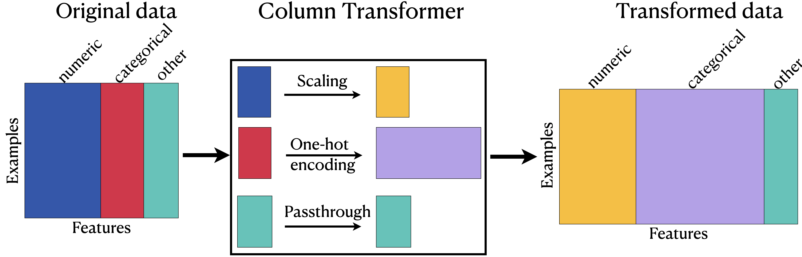
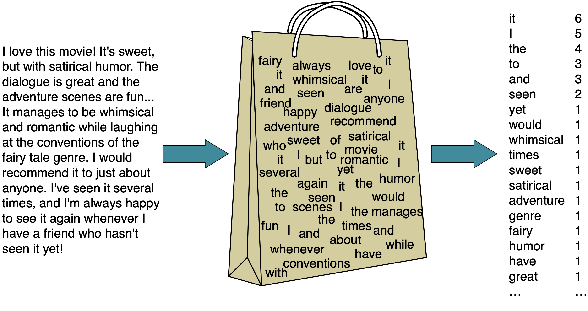

import sys
from pathlib import Path
import numpy as np
import pandas as pd
from IPython.display import display
from sklearn import set_config
from sklearn.compose import ColumnTransformer, make_column_transformer
from sklearn.dummy import DummyRegressor
from sklearn.feature_extraction.text import CountVectorizer
from sklearn.impute import SimpleImputer
from sklearn.model_selection import cross_validate, train_test_split
from sklearn.neighbors import KNeighborsRegressor
from sklearn.pipeline import make_pipeline
from sklearn.preprocessing import OneHotEncoder, OrdinalEncoder, StandardScaler
from sklearn.svm import SVC, SVR
sys.path.append("code")
from utils import summarize_cross_validation
pd.set_option("display.max_colwidth", 200)
DATA_DIR = Path("data")Chapter 5: Column Transformers and Text Features
By the end of this chapter, you will be able to:
- Combine transformations for different feature types using
ColumnTransformerand ascikit-learnpipeline. - Construct column transformers whose components contain multiple preprocessing steps.
- Explain when ordinal encoding and one-hot encoding are appropriate.
- Explain how
handle_unknown="ignore"anddrop="if_binary"affect one-hot encoding. - Describe challenges created by categorical features with many possible values.
- Explain why text needs a different representation from ordinary categorical features.
- Use
CountVectorizerto construct bag-of-words features and explain its main hyperparameters. - Incorporate text features into a machine learning pipeline.
Chapter 4 introduced several preprocessing transformations, but our first pipeline could apply only one sequence of transformations to every input feature. Real datasets are usually heterogeneous: numeric, nominal, ordinal, binary, and text features need different representations.
This chapter introduces ColumnTransformer, which lets us apply an appropriate transformation to each group of columns and combine the results. We will then turn to text, where each document must be converted into a numeric feature vector before it can enter a machine learning model.
Imports
Applying different transformations with ColumnTransformer
Most applied datasets contain several feature types. A numeric measurement may need imputation and scaling, a nominal category may need one-hot encoding, and an ordinal category may need an encoding that preserves its order. A single pipeline cannot apply all three sequences selectively.
ColumnTransformer solves this problem by assigning a transformer—or a pipeline of transformers—to a specified group of columns. It then concatenates the transformed groups into one feature matrix for the final estimator.
Chapter 4 introduced the quiz-grade dataset and deliberately restricted its first pipeline to numeric features. We now return to the same training problem and incorporate the nominal, ordinal, and binary features using a ColumnTransformer.
WarningA teaching dataset, not evidence about students
This dataset contains only 21 invented examples. It is designed to make transformations easy to inspect, not to support conclusions about real students. The scores below are unstable demonstrations of an API and should not be interpreted as evidence that major, attendance, or any other feature determines student ability or quiz performance. A real educational prediction system would also raise serious questions about measurement, fairness, consent, and the consequences of errors that are outside the scope of this toy example.
df = pd.read_csv(DATA_DIR / "quiz2-grade-toy-col-transformer.csv")
df| enjoy_course | ml_experience | major | class_attendance | university_years | lab1 | lab2 | lab3 | lab4 | quiz1 | quiz2 | |
|---|---|---|---|---|---|---|---|---|---|---|---|
| 0 | yes | 1 | Computer Science | Excellent | 3 | 92 | 93.0 | 84 | 91 | 92 | A+ |
| 1 | yes | 1 | Mechanical Engineering | Average | 2 | 94 | 90.0 | 80 | 83 | 91 | not A+ |
| 2 | yes | 0 | Mathematics | Poor | 3 | 78 | 85.0 | 83 | 80 | 80 | not A+ |
| 3 | no | 0 | Mathematics | Excellent | 3 | 91 | NaN | 92 | 91 | 89 | A+ |
| 4 | yes | 0 | Psychology | Good | 4 | 77 | 83.0 | 90 | 92 | 85 | A+ |
| 5 | no | 1 | Economics | Good | 5 | 70 | 73.0 | 68 | 74 | 71 | not A+ |
| 6 | yes | 1 | Computer Science | Excellent | 4 | 80 | 88.0 | 89 | 88 | 91 | A+ |
| 7 | no | 0 | Mechanical Engineering | Poor | 3 | 95 | 93.0 | 69 | 79 | 75 | not A+ |
| 8 | no | 0 | Linguistics | Average | 2 | 97 | 90.0 | 94 | 82 | 80 | not A+ |
| 9 | yes | 1 | Mathematics | Average | 4 | 95 | 82.0 | 94 | 94 | 85 | not A+ |
| 10 | yes | 0 | Psychology | Good | 3 | 98 | 86.0 | 95 | 95 | 78 | A+ |
| 11 | yes | 1 | Physics | Average | 1 | 95 | 88.0 | 93 | 92 | 85 | A+ |
| 12 | yes | 1 | Physics | Excellent | 2 | 98 | 96.0 | 96 | 99 | 100 | A+ |
| 13 | yes | 0 | Mechanical Engineering | Excellent | 4 | 95 | 94.0 | 96 | 95 | 100 | A+ |
| 14 | no | 0 | Mathematics | Poor | 3 | 95 | 90.0 | 93 | 95 | 70 | not A+ |
| 15 | no | 1 | Computer Science | Good | 3 | 92 | 85.0 | 67 | 94 | 92 | not A+ |
| 16 | yes | 0 | Computer Science | Average | 5 | 75 | 91.0 | 93 | 86 | 85 | A+ |
| 17 | yes | 1 | Economics | Average | 3 | 86 | 89.0 | 65 | 86 | 87 | not A+ |
| 18 | no | 1 | Biology | Good | 2 | 91 | NaN | 90 | 88 | 82 | not A+ |
| 19 | no | 0 | Psychology | Poor | 2 | 77 | 94.0 | 87 | 81 | 89 | not A+ |
| 20 | yes | 1 | Linguistics | Excellent | 4 | 96 | 92.0 | 92 | 96 | 87 | A+ |
df.info()<class 'pandas.DataFrame'>
RangeIndex: 21 entries, 0 to 20
Data columns (total 11 columns):
# Column Non-Null Count Dtype
--- ------ -------------- -----
0 enjoy_course 21 non-null str
1 ml_experience 21 non-null int64
2 major 21 non-null str
3 class_attendance 21 non-null str
4 university_years 21 non-null int64
5 lab1 21 non-null int64
6 lab2 19 non-null float64
7 lab3 21 non-null int64
8 lab4 21 non-null int64
9 quiz1 21 non-null int64
10 quiz2 21 non-null str
dtypes: float64(1), int64(6), str(4)
memory usage: 1.9 KBPlanning the transformations
df.head()| enjoy_course | ml_experience | major | class_attendance | university_years | lab1 | lab2 | lab3 | lab4 | quiz1 | quiz2 | |
|---|---|---|---|---|---|---|---|---|---|---|---|
| 0 | yes | 1 | Computer Science | Excellent | 3 | 92 | 93.0 | 84 | 91 | 92 | A+ |
| 1 | yes | 1 | Mechanical Engineering | Average | 2 | 94 | 90.0 | 80 | 83 | 91 | not A+ |
| 2 | yes | 0 | Mathematics | Poor | 3 | 78 | 85.0 | 83 | 80 | 80 | not A+ |
| 3 | no | 0 | Mathematics | Excellent | 3 | 91 | NaN | 92 | 91 | 89 | A+ |
| 4 | yes | 0 | Psychology | Good | 4 | 77 | 83.0 | 90 | 92 | 85 | A+ |
Before writing code, we should decide what each column represents and what the model needs from its representation.
| Features | Type | Planned transformation | Reasoning |
|---|---|---|---|
university_years, lab1–lab4, quiz1 |
Numeric | Median imputation, then standardization | lab2 contains missing values, which the estimator cannot accept. Scaling prevents a feature’s numerical spread from determining its influence on a distance- or kernel-based model. |
major |
Nominal categorical | One-hot encoding | The majors have no meaningful order, so integer codes would introduce arbitrary distances. |
class_attendance |
Ordinal categorical | Ordinal encoding with an explicit order | The labels Poor, Average, Good, and Excellent have a meaningful ranking that we want to preserve. |
enjoy_course |
Binary categorical | One-hot encoding with one output column | The values are categories rather than measured numbers. One binary indicator is sufficient to represent two categories. |
ml_experience |
Already numeric and binary | Pass through unchanged | The column is already represented as 0 and 1, so no encoding is required. |
These choices are plausible for this teaching example, not universal rules. For instance, ordinal encoding assumes that adjacent attendance levels have comparable spacing. The appropriate transformation always depends on what a feature means and how the downstream model uses it.
Building a ColumnTransformer
Separate the features and target
X = df.drop(columns=["quiz2"])
y = df["quiz2"]
X.columnsIndex(['enjoy_course', 'ml_experience', 'major', 'class_attendance',
'university_years', 'lab1', 'lab2', 'lab3', 'lab4', 'quiz1'],
dtype='str')Identify the transformations
X.head()| enjoy_course | ml_experience | major | class_attendance | university_years | lab1 | lab2 | lab3 | lab4 | quiz1 | |
|---|---|---|---|---|---|---|---|---|---|---|
| 0 | yes | 1 | Computer Science | Excellent | 3 | 92 | 93.0 | 84 | 91 | 92 |
| 1 | yes | 1 | Mechanical Engineering | Average | 2 | 94 | 90.0 | 80 | 83 | 91 |
| 2 | yes | 0 | Mathematics | Poor | 3 | 78 | 85.0 | 83 | 80 | 80 |
| 3 | no | 0 | Mathematics | Excellent | 3 | 91 | NaN | 92 | 91 | 89 |
| 4 | yes | 0 | Psychology | Good | 4 | 77 | 83.0 | 90 | 92 | 85 |
numeric_feats = ["university_years", "lab1", "lab3", "lab4", "quiz1"] # apply scaling
categorical_feats = ["major"] # apply one-hot encoding
passthrough_feats = ["ml_experience"] # do not apply any transformation
drop_feats = [
"lab2",
"class_attendance",
"enjoy_course",
] # do not include these features in modelingWe will build the column transformer incrementally. We begin with numeric scaling, nominal one-hot encoding, and the already-numeric binary feature. We temporarily drop lab2, class_attendance, and enjoy_course, then add them back as we introduce the transformations they require.
Create the column transformer
The explicit ColumnTransformer constructor receives a list of (name, transformer, columns) tuples. The name lets us inspect or tune the fitted component later; the column list controls which part of the input the component receives. Columns omitted from this list are dropped by default.
ct = ColumnTransformer(
[
("scaling", StandardScaler(), numeric_feats),
("onehot", OneHotEncoder(sparse_output=False), categorical_feats),
]
)The make_column_transformer shorthand
Just as make_pipeline provides a concise alternative to Pipeline, make_column_transformer lets us omit explicit component names. It generates names from the transformer classes, such as standardscaler and onehotencoder. We will generally use this shorthand when custom names would not make the code clearer.
ct = make_column_transformer(
(StandardScaler(), numeric_feats), # scaling on numeric features
("passthrough", passthrough_feats), # no transformations on the binary features
(OneHotEncoder(), categorical_feats), # OHE on categorical features
("drop", drop_feats), # drop the drop features
)ctColumnTransformer(transformers=[('standardscaler', StandardScaler(),
['university_years', 'lab1', 'lab3', 'lab4',
'quiz1']),
('passthrough', 'passthrough',
['ml_experience']),
('onehotencoder', OneHotEncoder(), ['major']),
('drop', 'drop',
['lab2', 'class_attendance', 'enjoy_course'])])In a Jupyter environment, please rerun this cell to show the HTML representation or trust the notebook. On GitHub, the HTML representation is unable to render, please try loading this page with nbviewer.org.
Parameters
['university_years', 'lab1', 'lab3', 'lab4', 'quiz1']
Parameters
['major']
Parameters
['lab2', 'class_attendance', 'enjoy_course']
drop
transformed = ct.fit_transform(X)When we call fit_transform, the column transformer sends each selected group of columns to its assigned transformer and concatenates the results horizontally. The output rows still correspond to the original examples, but the columns now represent the transformed features.
Combining the operations in one object also helps preserve a consistent workflow. The same fitted object can transform validation, test, and deployment data, so we are less likely to omit a step or accidentally use a different encoding. When the column transformer is placed inside a pipeline, cross-validation fits every transformation using only the training portion of each fold.
Examine the transformed data
type(transformed[:2])numpy.ndarraytransformedarray([[-0.09345386, 0.3589134 , -0.21733442, 0.36269995, 0.84002795,
1. , 0. , 1. , 0. , 0. ,
0. , 0. , 0. , 0. ],
[-1.07471942, 0.59082668, -0.61420598, -0.85597188, 0.71219761,
1. , 0. , 0. , 0. , 0. ,
0. , 1. , 0. , 0. ],
[-0.09345386, -1.26447953, -0.31655231, -1.31297381, -0.69393613,
0. , 0. , 0. , 0. , 0. ,
1. , 0. , 0. , 0. ],
[-0.09345386, 0.24295676, 0.57640869, 0.36269995, 0.45653693,
0. , 0. , 0. , 0. , 0. ,
1. , 0. , 0. , 0. ],
[ 0.8878117 , -1.38043616, 0.37797291, 0.51503393, -0.05478443,
0. , 0. , 0. , 0. , 0. ,
0. , 0. , 0. , 1. ],
[ 1.86907725, -2.19213263, -1.80482065, -2.22697768, -1.84440919,
1. , 0. , 0. , 1. , 0. ,
0. , 0. , 0. , 0. ],
[ 0.8878117 , -1.03256625, 0.27875502, -0.09430199, 0.71219761,
1. , 0. , 1. , 0. , 0. ,
0. , 0. , 0. , 0. ],
[-0.09345386, 0.70678332, -1.70560276, -1.46530779, -1.33308783,
0. , 0. , 0. , 0. , 0. ,
0. , 1. , 0. , 0. ],
[-1.07471942, 0.93869659, 0.77484447, -1.00830586, -0.69393613,
0. , 0. , 0. , 0. , 1. ,
0. , 0. , 0. , 0. ],
[ 0.8878117 , 0.70678332, 0.77484447, 0.81970188, -0.05478443,
1. , 0. , 0. , 0. , 0. ,
1. , 0. , 0. , 0. ],
[-0.09345386, 1.05465323, 0.87406235, 0.97203586, -0.94959681,
0. , 0. , 0. , 0. , 0. ,
0. , 0. , 0. , 1. ],
[-2.05598498, 0.70678332, 0.67562658, 0.51503393, -0.05478443,
1. , 0. , 0. , 0. , 0. ,
0. , 0. , 1. , 0. ],
[-1.07471942, 1.05465323, 0.97328024, 1.58137177, 1.86267067,
1. , 0. , 0. , 0. , 0. ,
0. , 0. , 1. , 0. ],
[ 0.8878117 , 0.70678332, 0.97328024, 0.97203586, 1.86267067,
0. , 0. , 0. , 0. , 0. ,
0. , 1. , 0. , 0. ],
[-0.09345386, 0.70678332, 0.67562658, 0.97203586, -1.97223953,
0. , 0. , 0. , 0. , 0. ,
1. , 0. , 0. , 0. ],
[-0.09345386, 0.3589134 , -1.90403853, 0.81970188, 0.84002795,
1. , 0. , 1. , 0. , 0. ,
0. , 0. , 0. , 0. ],
[ 1.86907725, -1.61234944, 0.67562658, -0.39896994, -0.05478443,
0. , 0. , 1. , 0. , 0. ,
0. , 0. , 0. , 0. ],
[-0.09345386, -0.33682642, -2.10247431, -0.39896994, 0.20087625,
1. , 0. , 0. , 1. , 0. ,
0. , 0. , 0. , 0. ],
[-1.07471942, 0.24295676, 0.37797291, -0.09430199, -0.43827545,
1. , 1. , 0. , 0. , 0. ,
0. , 0. , 0. , 0. ],
[-1.07471942, -1.38043616, 0.08031924, -1.16063983, 0.45653693,
0. , 0. , 0. , 0. , 0. ,
0. , 0. , 0. , 1. ],
[ 0.8878117 , 0.82273995, 0.57640869, 1.12436984, 0.20087625,
1. , 0. , 0. , 0. , 1. ,
0. , 0. , 0. , 0. ]])
Note
By default, the transformed result is an array or sparse matrix rather than a DataFrame, so its columns do not appear with names.
View the transformed data as a DataFrame
One-hot encoding changes the number of columns, so the original feature names no longer map directly to the transformed matrix. A fitted column transformer can report the output names with get_feature_names_out. We can use those names to construct a DataFrame for inspection.
ct.named_transformers_{'standardscaler': StandardScaler(),
'passthrough': FunctionTransformer(accept_sparse=True, check_inverse=False,
feature_names_out='one-to-one'),
'onehotencoder': OneHotEncoder(),
'drop': 'drop'}column_names = (
numeric_feats
+ passthrough_feats
+ ct.named_transformers_["onehotencoder"].get_feature_names_out().tolist()
)
column_names['university_years',
'lab1',
'lab3',
'lab4',
'quiz1',
'ml_experience',
'major_Biology',
'major_Computer Science',
'major_Economics',
'major_Linguistics',
'major_Mathematics',
'major_Mechanical Engineering',
'major_Physics',
'major_Psychology']
Note
The output column order follows the order of the components in the column transformer, not necessarily the order of columns in the original DataFrame. Code that interprets individual transformed columns should use get_feature_names_out rather than assume positions.
The generated names usually include the transformer name, original feature name, and—when relevant—the encoded category. For example, onehotencoder__major_Computer Science identifies the component, source column, and category.
column_names = ct.get_feature_names_out()
column_namesarray(['standardscaler__university_years', 'standardscaler__lab1',
'standardscaler__lab3', 'standardscaler__lab4',
'standardscaler__quiz1', 'passthrough__ml_experience',
'onehotencoder__major_Biology',
'onehotencoder__major_Computer Science',
'onehotencoder__major_Economics',
'onehotencoder__major_Linguistics',
'onehotencoder__major_Mathematics',
'onehotencoder__major_Mechanical Engineering',
'onehotencoder__major_Physics', 'onehotencoder__major_Psychology'],
dtype=object)pd.DataFrame(transformed, columns=column_names)| standardscaler__university_years | standardscaler__lab1 | standardscaler__lab3 | standardscaler__lab4 | standardscaler__quiz1 | passthrough__ml_experience | onehotencoder__major_Biology | onehotencoder__major_Computer Science | onehotencoder__major_Economics | onehotencoder__major_Linguistics | onehotencoder__major_Mathematics | onehotencoder__major_Mechanical Engineering | onehotencoder__major_Physics | onehotencoder__major_Psychology | |
|---|---|---|---|---|---|---|---|---|---|---|---|---|---|---|
| 0 | -0.093454 | 0.358913 | -0.217334 | 0.362700 | 0.840028 | 1.0 | 0.0 | 1.0 | 0.0 | 0.0 | 0.0 | 0.0 | 0.0 | 0.0 |
| 1 | -1.074719 | 0.590827 | -0.614206 | -0.855972 | 0.712198 | 1.0 | 0.0 | 0.0 | 0.0 | 0.0 | 0.0 | 1.0 | 0.0 | 0.0 |
| 2 | -0.093454 | -1.264480 | -0.316552 | -1.312974 | -0.693936 | 0.0 | 0.0 | 0.0 | 0.0 | 0.0 | 1.0 | 0.0 | 0.0 | 0.0 |
| 3 | -0.093454 | 0.242957 | 0.576409 | 0.362700 | 0.456537 | 0.0 | 0.0 | 0.0 | 0.0 | 0.0 | 1.0 | 0.0 | 0.0 | 0.0 |
| 4 | 0.887812 | -1.380436 | 0.377973 | 0.515034 | -0.054784 | 0.0 | 0.0 | 0.0 | 0.0 | 0.0 | 0.0 | 0.0 | 0.0 | 1.0 |
| 5 | 1.869077 | -2.192133 | -1.804821 | -2.226978 | -1.844409 | 1.0 | 0.0 | 0.0 | 1.0 | 0.0 | 0.0 | 0.0 | 0.0 | 0.0 |
| 6 | 0.887812 | -1.032566 | 0.278755 | -0.094302 | 0.712198 | 1.0 | 0.0 | 1.0 | 0.0 | 0.0 | 0.0 | 0.0 | 0.0 | 0.0 |
| 7 | -0.093454 | 0.706783 | -1.705603 | -1.465308 | -1.333088 | 0.0 | 0.0 | 0.0 | 0.0 | 0.0 | 0.0 | 1.0 | 0.0 | 0.0 |
| 8 | -1.074719 | 0.938697 | 0.774844 | -1.008306 | -0.693936 | 0.0 | 0.0 | 0.0 | 0.0 | 1.0 | 0.0 | 0.0 | 0.0 | 0.0 |
| 9 | 0.887812 | 0.706783 | 0.774844 | 0.819702 | -0.054784 | 1.0 | 0.0 | 0.0 | 0.0 | 0.0 | 1.0 | 0.0 | 0.0 | 0.0 |
| 10 | -0.093454 | 1.054653 | 0.874062 | 0.972036 | -0.949597 | 0.0 | 0.0 | 0.0 | 0.0 | 0.0 | 0.0 | 0.0 | 0.0 | 1.0 |
| 11 | -2.055985 | 0.706783 | 0.675627 | 0.515034 | -0.054784 | 1.0 | 0.0 | 0.0 | 0.0 | 0.0 | 0.0 | 0.0 | 1.0 | 0.0 |
| 12 | -1.074719 | 1.054653 | 0.973280 | 1.581372 | 1.862671 | 1.0 | 0.0 | 0.0 | 0.0 | 0.0 | 0.0 | 0.0 | 1.0 | 0.0 |
| 13 | 0.887812 | 0.706783 | 0.973280 | 0.972036 | 1.862671 | 0.0 | 0.0 | 0.0 | 0.0 | 0.0 | 0.0 | 1.0 | 0.0 | 0.0 |
| 14 | -0.093454 | 0.706783 | 0.675627 | 0.972036 | -1.972240 | 0.0 | 0.0 | 0.0 | 0.0 | 0.0 | 1.0 | 0.0 | 0.0 | 0.0 |
| 15 | -0.093454 | 0.358913 | -1.904039 | 0.819702 | 0.840028 | 1.0 | 0.0 | 1.0 | 0.0 | 0.0 | 0.0 | 0.0 | 0.0 | 0.0 |
| 16 | 1.869077 | -1.612349 | 0.675627 | -0.398970 | -0.054784 | 0.0 | 0.0 | 1.0 | 0.0 | 0.0 | 0.0 | 0.0 | 0.0 | 0.0 |
| 17 | -0.093454 | -0.336826 | -2.102474 | -0.398970 | 0.200876 | 1.0 | 0.0 | 0.0 | 1.0 | 0.0 | 0.0 | 0.0 | 0.0 | 0.0 |
| 18 | -1.074719 | 0.242957 | 0.377973 | -0.094302 | -0.438275 | 1.0 | 1.0 | 0.0 | 0.0 | 0.0 | 0.0 | 0.0 | 0.0 | 0.0 |
| 19 | -1.074719 | -1.380436 | 0.080319 | -1.160640 | 0.456537 | 0.0 | 0.0 | 0.0 | 0.0 | 0.0 | 0.0 | 0.0 | 0.0 | 1.0 |
| 20 | 0.887812 | 0.822740 | 0.576409 | 1.124370 | 0.200876 | 1.0 | 0.0 | 0.0 | 0.0 | 1.0 | 0.0 | 0.0 | 0.0 | 0.0 |
How the transformed columns are combined

Train a model with the transformed data
The column transformer handles feature preparation but does not make predictions. We place it before an estimator in a pipeline so that preprocessing and prediction behave as one fitted object.
pipe = make_pipeline(ct, SVC())
pipe.fit(X, y)
pipe.predict(X)array(['A+', 'not A+', 'not A+', 'A+', 'A+', 'not A+', 'A+', 'not A+',
'not A+', 'A+', 'A+', 'A+', 'A+', 'A+', 'not A+', 'not A+', 'A+',
'not A+', 'not A+', 'not A+', 'A+'], dtype=object)pipePipeline(steps=[('columntransformer',
ColumnTransformer(transformers=[('standardscaler',
StandardScaler(),
['university_years', 'lab1',
'lab3', 'lab4', 'quiz1']),
('passthrough', 'passthrough',
['ml_experience']),
('onehotencoder',
OneHotEncoder(), ['major']),
('drop', 'drop',
['lab2', 'class_attendance',
'enjoy_course'])])),
('svc', SVC())])In a Jupyter environment, please rerun this cell to show the HTML representation or trust the notebook. On GitHub, the HTML representation is unable to render, please try loading this page with nbviewer.org.
Parameters
Fitted attributes
| Name | Type | Value |
|---|---|---|
| classes_ classes_: ndarray of shape (n_classes,) The classes labels. Only exist if the last step of the pipeline is a classifier. |
ndarray[object](2,) | ['A+','not A+'] |
| feature_names_in_ feature_names_in_: ndarray of shape (`n_features_in_`,) Names of features seen during :term:`fit`. Only defined if the underlying estimator exposes such an attribute when fit. .. versionadded:: 1.0 |
ndarray[object](10,) | ['enjoy_course','ml_experience','major',...,'lab3','lab4','quiz1'] |
| n_features_in_ n_features_in_: int Number of features seen during :term:`fit`. Only defined if the underlying first estimator in `steps` exposes such an attribute when fit. .. versionadded:: 0.24 |
int | 10 |
Parameters
Fitted attributes
['university_years', 'lab1', 'lab3', 'lab4', 'quiz1']
Parameters
Fitted attributes
5 features
| university_years |
| lab1 |
| lab3 |
| lab4 |
| quiz1 |
1 feature
| ml_experience |
['major']
Parameters
Fitted attributes
8 features
| major_Biology |
| major_Computer Science |
| major_Economics |
| major_Linguistics |
| major_Mathematics |
| major_Mechanical Engineering |
| major_Physics |
| major_Psychology |
['lab2', 'class_attendance', 'enjoy_course']
drop
14 features
| standardscaler__university_years |
| standardscaler__lab1 |
| standardscaler__lab3 |
| standardscaler__lab4 |
| standardscaler__quiz1 |
| passthrough__ml_experience |
| onehotencoder__major_Biology |
| onehotencoder__major_Computer Science |
| onehotencoder__major_Economics |
| onehotencoder__major_Linguistics |
| onehotencoder__major_Mathematics |
| onehotencoder__major_Mechanical Engineering |
| onehotencoder__major_Physics |
| onehotencoder__major_Psychology |
Parameters
Fitted attributes
Exercise 5.1
Select all of the following statements which are TRUE.
- You could carry out cross-validation by passing a
ColumnTransformerobject tocross_validate. - After applying column transformer, the order of the columns in the transformed data has to be the same as the order of the columns in the original data.
- After applying a column transformer, the transformed data is always going to be of different shape than the original data.
- When you call
fit_transformon aColumnTransformerobject, you get a numpy ndarray.
Completing the transformation plan
Displaying transformers with set_config
As preprocessing becomes nested, a text representation can be difficult to read. Setting display="diagram" gives estimators a visual representation in Jupyter, making it easier to verify which columns enter each branch. This changes only the display, not the fitted object or its behaviour.
set_config(display="diagram")ctColumnTransformer(transformers=[('standardscaler', StandardScaler(),
['university_years', 'lab1', 'lab3', 'lab4',
'quiz1']),
('passthrough', 'passthrough',
['ml_experience']),
('onehotencoder', OneHotEncoder(), ['major']),
('drop', 'drop',
['lab2', 'class_attendance', 'enjoy_course'])])In a Jupyter environment, please rerun this cell to show the HTML representation or trust the notebook. On GitHub, the HTML representation is unable to render, please try loading this page with nbviewer.org.
Parameters
Fitted attributes
['university_years', 'lab1', 'lab3', 'lab4', 'quiz1']
Parameters
Fitted attributes
5 features
| university_years |
| lab1 |
| lab3 |
| lab4 |
| quiz1 |
1 feature
| ml_experience |
['major']
Parameters
Fitted attributes
8 features
| major_Biology |
| major_Computer Science |
| major_Economics |
| major_Linguistics |
| major_Mathematics |
| major_Mechanical Engineering |
| major_Physics |
| major_Psychology |
['lab2', 'class_attendance', 'enjoy_course']
drop
14 features
| standardscaler__university_years |
| standardscaler__lab1 |
| standardscaler__lab3 |
| standardscaler__lab4 |
| standardscaler__quiz1 |
| passthrough__ml_experience |
| onehotencoder__major_Biology |
| onehotencoder__major_Computer Science |
| onehotencoder__major_Economics |
| onehotencoder__major_Linguistics |
| onehotencoder__major_Mathematics |
| onehotencoder__major_Mechanical Engineering |
| onehotencoder__major_Physics |
| onehotencoder__major_Psychology |
print(ct)ColumnTransformer(transformers=[('standardscaler', StandardScaler(),
['university_years', 'lab1', 'lab3', 'lab4',
'quiz1']),
('passthrough', 'passthrough',
['ml_experience']),
('onehotencoder', OneHotEncoder(), ['major']),
('drop', 'drop',
['lab2', 'class_attendance', 'enjoy_course'])])Multiple transformations for one column group
- Recall that
lab2has missing values.
X.head(10)| enjoy_course | ml_experience | major | class_attendance | university_years | lab1 | lab2 | lab3 | lab4 | quiz1 | |
|---|---|---|---|---|---|---|---|---|---|---|
| 0 | yes | 1 | Computer Science | Excellent | 3 | 92 | 93.0 | 84 | 91 | 92 |
| 1 | yes | 1 | Mechanical Engineering | Average | 2 | 94 | 90.0 | 80 | 83 | 91 |
| 2 | yes | 0 | Mathematics | Poor | 3 | 78 | 85.0 | 83 | 80 | 80 |
| 3 | no | 0 | Mathematics | Excellent | 3 | 91 | NaN | 92 | 91 | 89 |
| 4 | yes | 0 | Psychology | Good | 4 | 77 | 83.0 | 90 | 92 | 85 |
| 5 | no | 1 | Economics | Good | 5 | 70 | 73.0 | 68 | 74 | 71 |
| 6 | yes | 1 | Computer Science | Excellent | 4 | 80 | 88.0 | 89 | 88 | 91 |
| 7 | no | 0 | Mechanical Engineering | Poor | 3 | 95 | 93.0 | 69 | 79 | 75 |
| 8 | no | 0 | Linguistics | Average | 2 | 97 | 90.0 | 94 | 82 | 80 |
| 9 | yes | 1 | Mathematics | Average | 4 | 95 | 82.0 | 94 | 94 | 85 |
The initial column transformer dropped lab2 because it contains missing values. We now add it to the numeric group. Since the estimator cannot accept its missing entries, the numeric features need two ordered steps: impute first, then scale. Applying median imputation to every numeric feature is convenient; columns without missing values pass through the imputer unchanged.
numeric_feats = [
"university_years",
"lab1",
"lab2",
"lab3",
"lab4",
"quiz1",
] # apply scaling
categorical_feats = ["major"] # apply one-hot encoding
passthrough_feats = ["ml_experience"] # do not apply any transformation
drop_feats = ["class_attendance", "enjoy_course"]A pipeline can serve as one branch of a column transformer. During fitting, the numeric branch learns imputation values, fills missing entries, and then learns scaling statistics from the imputed data. The order matters because StandardScaler receives the imputer’s output.
ct = make_column_transformer(
(
make_pipeline(SimpleImputer(), StandardScaler()),
numeric_feats,
), # scaling on numeric features
("passthrough", passthrough_feats), # no transformations on the binary features
(OneHotEncoder(), categorical_feats), # OHE on categorical features
("drop", drop_feats), # drop the drop features
)ctColumnTransformer(transformers=[('pipeline',
Pipeline(steps=[('simpleimputer',
SimpleImputer()),
('standardscaler',
StandardScaler())]),
['university_years', 'lab1', 'lab2', 'lab3',
'lab4', 'quiz1']),
('passthrough', 'passthrough',
['ml_experience']),
('onehotencoder', OneHotEncoder(), ['major']),
('drop', 'drop',
['class_attendance', 'enjoy_course'])])In a Jupyter environment, please rerun this cell to show the HTML representation or trust the notebook. On GitHub, the HTML representation is unable to render, please try loading this page with nbviewer.org.
Parameters
['university_years', 'lab1', 'lab2', 'lab3', 'lab4', 'quiz1']
Parameters
Parameters
['major']
Parameters
['class_attendance', 'enjoy_course']
drop
X_transformed = ct.fit_transform(X)The outer column transformer still provides the names of all final features, including features produced by the nested numeric pipeline.
column_names = ct.get_feature_names_out()
column_namesarray(['pipeline__university_years', 'pipeline__lab1', 'pipeline__lab2',
'pipeline__lab3', 'pipeline__lab4', 'pipeline__quiz1',
'passthrough__ml_experience', 'onehotencoder__major_Biology',
'onehotencoder__major_Computer Science',
'onehotencoder__major_Economics',
'onehotencoder__major_Linguistics',
'onehotencoder__major_Mathematics',
'onehotencoder__major_Mechanical Engineering',
'onehotencoder__major_Physics', 'onehotencoder__major_Psychology'],
dtype=object)pd.DataFrame(X_transformed, columns=column_names)| pipeline__university_years | pipeline__lab1 | pipeline__lab2 | pipeline__lab3 | pipeline__lab4 | pipeline__quiz1 | passthrough__ml_experience | onehotencoder__major_Biology | onehotencoder__major_Computer Science | onehotencoder__major_Economics | onehotencoder__major_Linguistics | onehotencoder__major_Mathematics | onehotencoder__major_Mechanical Engineering | onehotencoder__major_Physics | onehotencoder__major_Psychology | |
|---|---|---|---|---|---|---|---|---|---|---|---|---|---|---|---|
| 0 | -0.093454 | 0.358913 | 0.893260 | -0.217334 | 0.362700 | 0.840028 | 1.0 | 0.0 | 1.0 | 0.0 | 0.0 | 0.0 | 0.0 | 0.0 | 0.0 |
| 1 | -1.074719 | 0.590827 | 0.294251 | -0.614206 | -0.855972 | 0.712198 | 1.0 | 0.0 | 0.0 | 0.0 | 0.0 | 0.0 | 1.0 | 0.0 | 0.0 |
| 2 | -0.093454 | -1.264480 | -0.704099 | -0.316552 | -1.312974 | -0.693936 | 0.0 | 0.0 | 0.0 | 0.0 | 0.0 | 1.0 | 0.0 | 0.0 | 0.0 |
| 3 | -0.093454 | 0.242957 | 0.000000 | 0.576409 | 0.362700 | 0.456537 | 0.0 | 0.0 | 0.0 | 0.0 | 0.0 | 1.0 | 0.0 | 0.0 | 0.0 |
| 4 | 0.887812 | -1.380436 | -1.103439 | 0.377973 | 0.515034 | -0.054784 | 0.0 | 0.0 | 0.0 | 0.0 | 0.0 | 0.0 | 0.0 | 0.0 | 1.0 |
| 5 | 1.869077 | -2.192133 | -3.100139 | -1.804821 | -2.226978 | -1.844409 | 1.0 | 0.0 | 0.0 | 1.0 | 0.0 | 0.0 | 0.0 | 0.0 | 0.0 |
| 6 | 0.887812 | -1.032566 | -0.105089 | 0.278755 | -0.094302 | 0.712198 | 1.0 | 0.0 | 1.0 | 0.0 | 0.0 | 0.0 | 0.0 | 0.0 | 0.0 |
| 7 | -0.093454 | 0.706783 | 0.893260 | -1.705603 | -1.465308 | -1.333088 | 0.0 | 0.0 | 0.0 | 0.0 | 0.0 | 0.0 | 1.0 | 0.0 | 0.0 |
| 8 | -1.074719 | 0.938697 | 0.294251 | 0.774844 | -1.008306 | -0.693936 | 0.0 | 0.0 | 0.0 | 0.0 | 1.0 | 0.0 | 0.0 | 0.0 | 0.0 |
| 9 | 0.887812 | 0.706783 | -1.303109 | 0.774844 | 0.819702 | -0.054784 | 1.0 | 0.0 | 0.0 | 0.0 | 0.0 | 1.0 | 0.0 | 0.0 | 0.0 |
| 10 | -0.093454 | 1.054653 | -0.504429 | 0.874062 | 0.972036 | -0.949597 | 0.0 | 0.0 | 0.0 | 0.0 | 0.0 | 0.0 | 0.0 | 0.0 | 1.0 |
| 11 | -2.055985 | 0.706783 | -0.105089 | 0.675627 | 0.515034 | -0.054784 | 1.0 | 0.0 | 0.0 | 0.0 | 0.0 | 0.0 | 0.0 | 1.0 | 0.0 |
| 12 | -1.074719 | 1.054653 | 1.492270 | 0.973280 | 1.581372 | 1.862671 | 1.0 | 0.0 | 0.0 | 0.0 | 0.0 | 0.0 | 0.0 | 1.0 | 0.0 |
| 13 | 0.887812 | 0.706783 | 1.092930 | 0.973280 | 0.972036 | 1.862671 | 0.0 | 0.0 | 0.0 | 0.0 | 0.0 | 0.0 | 1.0 | 0.0 | 0.0 |
| 14 | -0.093454 | 0.706783 | 0.294251 | 0.675627 | 0.972036 | -1.972240 | 0.0 | 0.0 | 0.0 | 0.0 | 0.0 | 1.0 | 0.0 | 0.0 | 0.0 |
| 15 | -0.093454 | 0.358913 | -0.704099 | -1.904039 | 0.819702 | 0.840028 | 1.0 | 0.0 | 1.0 | 0.0 | 0.0 | 0.0 | 0.0 | 0.0 | 0.0 |
| 16 | 1.869077 | -1.612349 | 0.493921 | 0.675627 | -0.398970 | -0.054784 | 0.0 | 0.0 | 1.0 | 0.0 | 0.0 | 0.0 | 0.0 | 0.0 | 0.0 |
| 17 | -0.093454 | -0.336826 | 0.094581 | -2.102474 | -0.398970 | 0.200876 | 1.0 | 0.0 | 0.0 | 1.0 | 0.0 | 0.0 | 0.0 | 0.0 | 0.0 |
| 18 | -1.074719 | 0.242957 | 0.000000 | 0.377973 | -0.094302 | -0.438275 | 1.0 | 1.0 | 0.0 | 0.0 | 0.0 | 0.0 | 0.0 | 0.0 | 0.0 |
| 19 | -1.074719 | -1.380436 | 1.092930 | 0.080319 | -1.160640 | 0.456537 | 0.0 | 0.0 | 0.0 | 0.0 | 0.0 | 0.0 | 0.0 | 0.0 | 1.0 |
| 20 | 0.887812 | 0.822740 | 0.693590 | 0.576409 | 1.124370 | 0.200876 | 1.0 | 0.0 | 0.0 | 0.0 | 1.0 | 0.0 | 0.0 | 0.0 | 0.0 |
Incorporating the ordinal feature class_attendance
Unlike major, class_attendance has a meaningful order: Poor < Average < Good < Excellent. One-hot encoding would discard that ordering. We instead use OrdinalEncoder, but we must tell it the intended order explicitly.
X.head()| enjoy_course | ml_experience | major | class_attendance | university_years | lab1 | lab2 | lab3 | lab4 | quiz1 | |
|---|---|---|---|---|---|---|---|---|---|---|
| 0 | yes | 1 | Computer Science | Excellent | 3 | 92 | 93.0 | 84 | 91 | 92 |
| 1 | yes | 1 | Mechanical Engineering | Average | 2 | 94 | 90.0 | 80 | 83 | 91 |
| 2 | yes | 0 | Mathematics | Poor | 3 | 78 | 85.0 | 83 | 80 | 80 |
| 3 | no | 0 | Mathematics | Excellent | 3 | 91 | NaN | 92 | 91 | 89 |
| 4 | yes | 0 | Psychology | Good | 4 | 77 | 83.0 | 90 | 92 | 85 |
First, consider what happens when we let OrdinalEncoder discover the categories automatically.
X_toy = X[["class_attendance"]]
enc = OrdinalEncoder()
enc.fit(X_toy)
X_toy_ord = enc.transform(X_toy)
df = pd.DataFrame(
data=X_toy_ord,
columns=["class_attendance_enc"],
index=X_toy.index,
)pd.concat([X_toy, df], axis=1).head(10)| class_attendance | class_attendance_enc | |
|---|---|---|
| 0 | Excellent | 1.0 |
| 1 | Average | 0.0 |
| 2 | Poor | 3.0 |
| 3 | Excellent | 1.0 |
| 4 | Good | 2.0 |
| 5 | Good | 2.0 |
| 6 | Excellent | 1.0 |
| 7 | Poor | 3.0 |
| 8 | Average | 0.0 |
| 9 | Average | 0.0 |
The automatically discovered categories are sorted alphabetically, not by attendance level. The encoder cannot infer semantic order from strings. We need to provide an ordering based on knowledge of how the feature was defined.
We first inspect the observed labels so that our explicit ordering neither omits a category nor introduces a spelling mismatch.
X_toy["class_attendance"].unique()<StringArray>
['Excellent', 'Average', 'Poor', 'Good']
Length: 4, dtype: strWe then supply the categories from lowest to highest attendance.
class_attendance_levels = ["Poor", "Average", "Good", "Excellent"]
Note
Reversing the order preserves pairwise distances between these integer codes, so some models may make equivalent predictions after refitting. The coefficients or directions of effects would reverse, however, and the encoded values would contradict their natural interpretation. Supplying the meaningful order makes the representation easier to reason about.
An assertion checks that the supplied ordering contains exactly the categories observed in this dataset. In a real pipeline, we would also decide how to handle categories that might appear later.
assert set(class_attendance_levels) == set(X_toy["class_attendance"].unique())oe = OrdinalEncoder(categories=[class_attendance_levels], dtype=int)
oe.fit(X_toy[["class_attendance"]])
ca_transformed = oe.transform(X_toy[["class_attendance"]])
df = pd.DataFrame(
data=ca_transformed, columns=["class_attendance_enc"], index=X_toy.index
)
print(oe.categories_)
pd.concat([X_toy, df], axis=1).head(10)[array(['Poor', 'Average', 'Good', 'Excellent'], dtype=object)]| class_attendance | class_attendance_enc | |
|---|---|---|
| 0 | Excellent | 3 |
| 1 | Average | 1 |
| 2 | Poor | 0 |
| 3 | Excellent | 3 |
| 4 | Good | 2 |
| 5 | Good | 2 |
| 6 | Excellent | 3 |
| 7 | Poor | 0 |
| 8 | Average | 1 |
| 9 | Average | 1 |
The resulting codes now increase with the intended attendance level.
More than one ordinal column
- We can pass the manually ordered categories when we create an
OrdinalEncoderobject as a list of lists. - If you have more than one ordinal columns
- manually create a list of ordered categories for each column
- pass a list of lists to
OrdinalEncoder, where each inner list corresponds to manually created list of ordered categories for a corresponding ordinal column.
We can now add the representation—not the already transformed values—to the column transformer. The pipeline will fit a fresh ordinal encoder whenever the complete model is fit.
X| enjoy_course | ml_experience | major | class_attendance | university_years | lab1 | lab2 | lab3 | lab4 | quiz1 | |
|---|---|---|---|---|---|---|---|---|---|---|
| 0 | yes | 1 | Computer Science | Excellent | 3 | 92 | 93.0 | 84 | 91 | 92 |
| 1 | yes | 1 | Mechanical Engineering | Average | 2 | 94 | 90.0 | 80 | 83 | 91 |
| 2 | yes | 0 | Mathematics | Poor | 3 | 78 | 85.0 | 83 | 80 | 80 |
| 3 | no | 0 | Mathematics | Excellent | 3 | 91 | NaN | 92 | 91 | 89 |
| 4 | yes | 0 | Psychology | Good | 4 | 77 | 83.0 | 90 | 92 | 85 |
| 5 | no | 1 | Economics | Good | 5 | 70 | 73.0 | 68 | 74 | 71 |
| 6 | yes | 1 | Computer Science | Excellent | 4 | 80 | 88.0 | 89 | 88 | 91 |
| 7 | no | 0 | Mechanical Engineering | Poor | 3 | 95 | 93.0 | 69 | 79 | 75 |
| 8 | no | 0 | Linguistics | Average | 2 | 97 | 90.0 | 94 | 82 | 80 |
| 9 | yes | 1 | Mathematics | Average | 4 | 95 | 82.0 | 94 | 94 | 85 |
| 10 | yes | 0 | Psychology | Good | 3 | 98 | 86.0 | 95 | 95 | 78 |
| 11 | yes | 1 | Physics | Average | 1 | 95 | 88.0 | 93 | 92 | 85 |
| 12 | yes | 1 | Physics | Excellent | 2 | 98 | 96.0 | 96 | 99 | 100 |
| 13 | yes | 0 | Mechanical Engineering | Excellent | 4 | 95 | 94.0 | 96 | 95 | 100 |
| 14 | no | 0 | Mathematics | Poor | 3 | 95 | 90.0 | 93 | 95 | 70 |
| 15 | no | 1 | Computer Science | Good | 3 | 92 | 85.0 | 67 | 94 | 92 |
| 16 | yes | 0 | Computer Science | Average | 5 | 75 | 91.0 | 93 | 86 | 85 |
| 17 | yes | 1 | Economics | Average | 3 | 86 | 89.0 | 65 | 86 | 87 |
| 18 | no | 1 | Biology | Good | 2 | 91 | NaN | 90 | 88 | 82 |
| 19 | no | 0 | Psychology | Poor | 2 | 77 | 94.0 | 87 | 81 | 89 |
| 20 | yes | 1 | Linguistics | Excellent | 4 | 96 | 92.0 | 92 | 96 | 87 |
numeric_feats = [
"university_years",
"lab1",
"lab2",
"lab3",
"lab4",
"quiz1",
] # apply scaling
categorical_feats = ["major"] # apply one-hot encoding
ordinal_feats = ["class_attendance"] # apply ordinal encoding
passthrough_feats = ["ml_experience"] # do not apply any transformation
drop_feats = ["enjoy_course"] # do not include these featuresct = make_column_transformer(
(
make_pipeline(SimpleImputer(), StandardScaler()),
numeric_feats,
), # scaling on numeric features
(
OrdinalEncoder(categories=[class_attendance_levels], dtype=int),
ordinal_feats,
), # Ordinal encoding on ordinal features
("passthrough", passthrough_feats), # no transformations on the binary features
(OneHotEncoder(), categorical_feats), # OHE on categorical features
("drop", drop_feats), # drop the drop features
)ctColumnTransformer(transformers=[('pipeline',
Pipeline(steps=[('simpleimputer',
SimpleImputer()),
('standardscaler',
StandardScaler())]),
['university_years', 'lab1', 'lab2', 'lab3',
'lab4', 'quiz1']),
('ordinalencoder',
OrdinalEncoder(categories=[['Poor', 'Average',
'Good',
'Excellent']],
dtype=<class 'int'>),
['class_attendance']),
('passthrough', 'passthrough',
['ml_experience']),
('onehotencoder', OneHotEncoder(), ['major']),
('drop', 'drop', ['enjoy_course'])])In a Jupyter environment, please rerun this cell to show the HTML representation or trust the notebook. On GitHub, the HTML representation is unable to render, please try loading this page with nbviewer.org.
Parameters
['university_years', 'lab1', 'lab2', 'lab3', 'lab4', 'quiz1']
Parameters
Parameters
['class_attendance']
Parameters
['major']
Parameters
['enjoy_course']
drop
X_transformed = ct.fit_transform(X)column_names = ct.get_feature_names_out()pd.DataFrame(X_transformed, columns=column_names)| pipeline__university_years | pipeline__lab1 | pipeline__lab2 | pipeline__lab3 | pipeline__lab4 | pipeline__quiz1 | ordinalencoder__class_attendance | passthrough__ml_experience | onehotencoder__major_Biology | onehotencoder__major_Computer Science | onehotencoder__major_Economics | onehotencoder__major_Linguistics | onehotencoder__major_Mathematics | onehotencoder__major_Mechanical Engineering | onehotencoder__major_Physics | onehotencoder__major_Psychology | |
|---|---|---|---|---|---|---|---|---|---|---|---|---|---|---|---|---|
| 0 | -0.093454 | 0.358913 | 0.893260 | -0.217334 | 0.362700 | 0.840028 | 3.0 | 1.0 | 0.0 | 1.0 | 0.0 | 0.0 | 0.0 | 0.0 | 0.0 | 0.0 |
| 1 | -1.074719 | 0.590827 | 0.294251 | -0.614206 | -0.855972 | 0.712198 | 1.0 | 1.0 | 0.0 | 0.0 | 0.0 | 0.0 | 0.0 | 1.0 | 0.0 | 0.0 |
| 2 | -0.093454 | -1.264480 | -0.704099 | -0.316552 | -1.312974 | -0.693936 | 0.0 | 0.0 | 0.0 | 0.0 | 0.0 | 0.0 | 1.0 | 0.0 | 0.0 | 0.0 |
| 3 | -0.093454 | 0.242957 | 0.000000 | 0.576409 | 0.362700 | 0.456537 | 3.0 | 0.0 | 0.0 | 0.0 | 0.0 | 0.0 | 1.0 | 0.0 | 0.0 | 0.0 |
| 4 | 0.887812 | -1.380436 | -1.103439 | 0.377973 | 0.515034 | -0.054784 | 2.0 | 0.0 | 0.0 | 0.0 | 0.0 | 0.0 | 0.0 | 0.0 | 0.0 | 1.0 |
| 5 | 1.869077 | -2.192133 | -3.100139 | -1.804821 | -2.226978 | -1.844409 | 2.0 | 1.0 | 0.0 | 0.0 | 1.0 | 0.0 | 0.0 | 0.0 | 0.0 | 0.0 |
| 6 | 0.887812 | -1.032566 | -0.105089 | 0.278755 | -0.094302 | 0.712198 | 3.0 | 1.0 | 0.0 | 1.0 | 0.0 | 0.0 | 0.0 | 0.0 | 0.0 | 0.0 |
| 7 | -0.093454 | 0.706783 | 0.893260 | -1.705603 | -1.465308 | -1.333088 | 0.0 | 0.0 | 0.0 | 0.0 | 0.0 | 0.0 | 0.0 | 1.0 | 0.0 | 0.0 |
| 8 | -1.074719 | 0.938697 | 0.294251 | 0.774844 | -1.008306 | -0.693936 | 1.0 | 0.0 | 0.0 | 0.0 | 0.0 | 1.0 | 0.0 | 0.0 | 0.0 | 0.0 |
| 9 | 0.887812 | 0.706783 | -1.303109 | 0.774844 | 0.819702 | -0.054784 | 1.0 | 1.0 | 0.0 | 0.0 | 0.0 | 0.0 | 1.0 | 0.0 | 0.0 | 0.0 |
| 10 | -0.093454 | 1.054653 | -0.504429 | 0.874062 | 0.972036 | -0.949597 | 2.0 | 0.0 | 0.0 | 0.0 | 0.0 | 0.0 | 0.0 | 0.0 | 0.0 | 1.0 |
| 11 | -2.055985 | 0.706783 | -0.105089 | 0.675627 | 0.515034 | -0.054784 | 1.0 | 1.0 | 0.0 | 0.0 | 0.0 | 0.0 | 0.0 | 0.0 | 1.0 | 0.0 |
| 12 | -1.074719 | 1.054653 | 1.492270 | 0.973280 | 1.581372 | 1.862671 | 3.0 | 1.0 | 0.0 | 0.0 | 0.0 | 0.0 | 0.0 | 0.0 | 1.0 | 0.0 |
| 13 | 0.887812 | 0.706783 | 1.092930 | 0.973280 | 0.972036 | 1.862671 | 3.0 | 0.0 | 0.0 | 0.0 | 0.0 | 0.0 | 0.0 | 1.0 | 0.0 | 0.0 |
| 14 | -0.093454 | 0.706783 | 0.294251 | 0.675627 | 0.972036 | -1.972240 | 0.0 | 0.0 | 0.0 | 0.0 | 0.0 | 0.0 | 1.0 | 0.0 | 0.0 | 0.0 |
| 15 | -0.093454 | 0.358913 | -0.704099 | -1.904039 | 0.819702 | 0.840028 | 2.0 | 1.0 | 0.0 | 1.0 | 0.0 | 0.0 | 0.0 | 0.0 | 0.0 | 0.0 |
| 16 | 1.869077 | -1.612349 | 0.493921 | 0.675627 | -0.398970 | -0.054784 | 1.0 | 0.0 | 0.0 | 1.0 | 0.0 | 0.0 | 0.0 | 0.0 | 0.0 | 0.0 |
| 17 | -0.093454 | -0.336826 | 0.094581 | -2.102474 | -0.398970 | 0.200876 | 1.0 | 1.0 | 0.0 | 0.0 | 1.0 | 0.0 | 0.0 | 0.0 | 0.0 | 0.0 |
| 18 | -1.074719 | 0.242957 | 0.000000 | 0.377973 | -0.094302 | -0.438275 | 2.0 | 1.0 | 1.0 | 0.0 | 0.0 | 0.0 | 0.0 | 0.0 | 0.0 | 0.0 |
| 19 | -1.074719 | -1.380436 | 1.092930 | 0.080319 | -1.160640 | 0.456537 | 0.0 | 0.0 | 0.0 | 0.0 | 0.0 | 0.0 | 0.0 | 0.0 | 0.0 | 1.0 |
| 20 | 0.887812 | 0.822740 | 0.693590 | 0.576409 | 1.124370 | 0.200876 | 3.0 | 1.0 | 0.0 | 0.0 | 0.0 | 1.0 | 0.0 | 0.0 | 0.0 | 0.0 |
Dealing with unknown categories
We now place the column transformer and an SVM in a pipeline and evaluate the complete workflow with cross-validation. This reveals an issue that is easy to miss when we transform the full dataset in one step.
pipe = make_pipeline(ct, SVC())scores = cross_validate(pipe, X, y, return_train_score=True)
pd.DataFrame(scores)/Users/kvarada/CS/2026-27/330/cpsc330-book/.venv/lib/python3.12/site-packages/sklearn/model_selection/_validation.py:956: UserWarning: Scoring failed. The score on this train-test partition for these parameters will be set to nan. Details:
Traceback (most recent call last):
File "/Users/kvarada/CS/2026-27/330/cpsc330-book/.venv/lib/python3.12/site-packages/sklearn/model_selection/_validation.py", line 945, in _score
scores = scorer(estimator, X_test, y_test, **score_params)
^^^^^^^^^^^^^^^^^^^^^^^^^^^^^^^^^^^^^^^^^^^^^^^^^
File "/Users/kvarada/CS/2026-27/330/cpsc330-book/.venv/lib/python3.12/site-packages/sklearn/metrics/_scorer.py", line 531, in __call__
return estimator.score(*args, **kwargs)
^^^^^^^^^^^^^^^^^^^^^^^^^^^^^^^^
File "/Users/kvarada/CS/2026-27/330/cpsc330-book/.venv/lib/python3.12/site-packages/sklearn/pipeline.py", line 1198, in score
Xt = transform.transform(Xt)
^^^^^^^^^^^^^^^^^^^^^^^
File "/Users/kvarada/CS/2026-27/330/cpsc330-book/.venv/lib/python3.12/site-packages/sklearn/utils/_set_output.py", line 319, in wrapped
data_to_wrap = f(self, X, *args, **kwargs)
^^^^^^^^^^^^^^^^^^^^^^^^^^^
File "/Users/kvarada/CS/2026-27/330/cpsc330-book/.venv/lib/python3.12/site-packages/sklearn/compose/_column_transformer.py", line 1079, in transform
Xs = self._call_func_on_transformers(
^^^^^^^^^^^^^^^^^^^^^^^^^^^^^^^^
File "/Users/kvarada/CS/2026-27/330/cpsc330-book/.venv/lib/python3.12/site-packages/sklearn/compose/_column_transformer.py", line 889, in _call_func_on_transformers
return Parallel(n_jobs=self.n_jobs)(jobs)
^^^^^^^^^^^^^^^^^^^^^^^^^^^^^^^^^^
File "/Users/kvarada/CS/2026-27/330/cpsc330-book/.venv/lib/python3.12/site-packages/sklearn/utils/parallel.py", line 91, in __call__
return super().__call__(iterable_with_config_and_warning_filters)
^^^^^^^^^^^^^^^^^^^^^^^^^^^^^^^^^^^^^^^^^^^^^^^^^^^^^^^^^^
File "/Users/kvarada/CS/2026-27/330/cpsc330-book/.venv/lib/python3.12/site-packages/joblib/parallel.py", line 1986, in __call__
return output if self.return_generator else list(output)
^^^^^^^^^^^^
File "/Users/kvarada/CS/2026-27/330/cpsc330-book/.venv/lib/python3.12/site-packages/joblib/parallel.py", line 1914, in _get_sequential_output
res = func(*args, **kwargs)
^^^^^^^^^^^^^^^^^^^^^
File "/Users/kvarada/CS/2026-27/330/cpsc330-book/.venv/lib/python3.12/site-packages/sklearn/utils/parallel.py", line 184, in __call__
return self.function(*args, **kwargs)
^^^^^^^^^^^^^^^^^^^^^^^^^^^^^^
File "/Users/kvarada/CS/2026-27/330/cpsc330-book/.venv/lib/python3.12/site-packages/sklearn/pipeline.py", line 1546, in _transform_one
res = transformer.transform(X, **params.transform)
^^^^^^^^^^^^^^^^^^^^^^^^^^^^^^^^^^^^^^^^^^^^
File "/Users/kvarada/CS/2026-27/330/cpsc330-book/.venv/lib/python3.12/site-packages/sklearn/utils/_set_output.py", line 319, in wrapped
data_to_wrap = f(self, X, *args, **kwargs)
^^^^^^^^^^^^^^^^^^^^^^^^^^^
File "/Users/kvarada/CS/2026-27/330/cpsc330-book/.venv/lib/python3.12/site-packages/sklearn/preprocessing/_encoders.py", line 1051, in transform
X_int, X_mask = self._transform(
^^^^^^^^^^^^^^^^
File "/Users/kvarada/CS/2026-27/330/cpsc330-book/.venv/lib/python3.12/site-packages/sklearn/preprocessing/_encoders.py", line 221, in _transform
raise ValueError(msg)
ValueError: Found unknown categories ['Biology'] in column 0 during transform
warnings.warn(| fit_time | score_time | test_score | train_score | |
|---|---|---|---|---|
| 0 | 0.003857 | 0.001463 | 1.00 | 0.937500 |
| 1 | 0.002399 | 0.001285 | 1.00 | 0.941176 |
| 2 | 0.002315 | 0.001319 | 0.50 | 1.000000 |
| 3 | 0.002290 | 0.001258 | 0.75 | 0.941176 |
| 4 | 0.002489 | 0.004760 | NaN | 1.000000 |
One fold raises ValueError: Found unknown categories ['Biology']. The error is not caused by the SVM; it occurs while the validation portion is being transformed.
X["major"].value_counts()major
Computer Science 4
Mathematics 4
Mechanical Engineering 3
Psychology 3
Economics 2
Linguistics 2
Physics 2
Biology 1
Name: count, dtype: int64Biology occurs only once. In the affected fold, that row is in the validation portion, so the encoder fitted on the fold’s training portion has never seen the category. By default, OneHotEncoder raises an error rather than silently invent a representation.
Setting handle_unknown="ignore" keeps the learned feature space fixed. An unseen major is represented by zeros in every learned major indicator column. This prevents an error, but it also makes all unseen majors indistinguishable from one another.
ct = make_column_transformer(
(
make_pipeline(SimpleImputer(), StandardScaler()),
numeric_feats,
), # scaling on numeric features
(
OrdinalEncoder(categories=[class_attendance_levels], dtype=int),
ordinal_feats,
), # Ordinal encoding on ordinal features
("passthrough", passthrough_feats), # no transformations on the binary features
(
OneHotEncoder(handle_unknown="ignore"),
categorical_feats,
), # OHE on categorical features
("drop", drop_feats), # drop the drop features
)ctColumnTransformer(transformers=[('pipeline',
Pipeline(steps=[('simpleimputer',
SimpleImputer()),
('standardscaler',
StandardScaler())]),
['university_years', 'lab1', 'lab2', 'lab3',
'lab4', 'quiz1']),
('ordinalencoder',
OrdinalEncoder(categories=[['Poor', 'Average',
'Good',
'Excellent']],
dtype=<class 'int'>),
['class_attendance']),
('passthrough', 'passthrough',
['ml_experience']),
('onehotencoder',
OneHotEncoder(handle_unknown='ignore'),
['major']),
('drop', 'drop', ['enjoy_course'])])In a Jupyter environment, please rerun this cell to show the HTML representation or trust the notebook. On GitHub, the HTML representation is unable to render, please try loading this page with nbviewer.org.
Parameters
['university_years', 'lab1', 'lab2', 'lab3', 'lab4', 'quiz1']
Parameters
Parameters
['class_attendance']
Parameters
['major']
Parameters
['enjoy_course']
drop
pipe = make_pipeline(ct, SVC())scores = cross_validate(pipe, X, y, cv=5, return_train_score=True)
pd.DataFrame(scores)| fit_time | score_time | test_score | train_score | |
|---|---|---|---|---|
| 0 | 0.005552 | 0.002250 | 1.00 | 0.937500 |
| 1 | 0.005022 | 0.003860 | 1.00 | 0.941176 |
| 2 | 0.002802 | 0.001458 | 0.50 | 1.000000 |
| 3 | 0.002567 | 0.001360 | 0.75 | 0.941176 |
| 4 | 0.002368 | 0.001300 | 0.75 | 1.000000 |
Cross-validation now completes, but ignore is a modelling choice rather than a universal fix. If unseen categories will be common or need to be distinguished, we might instead group rare categories, redesign the feature, or use an encoder that explicitly represents infrequent values.
Categories known independently of the data
Sometimes the complete set of categories is defined independently of the observed dataset—for example, Canadian provinces and territories. Supplying such a published list does not use information from validation or test examples, so it does not violate the Golden Rule. This differs from inspecting the full dataset to discover which categories happen to occur.
Categorical features with two possible categories
One-hot encoding a two-category feature normally creates two complementary columns. A single indicator contains the same information: knowing that one category is absent tells us that the other is present. OneHotEncoder(drop="if_binary") therefore emits one column for binary features while retaining all columns for features with more than two categories.
X["enjoy_course"].head()0 yes
1 yes
2 yes
3 no
4 yes
Name: enjoy_course, dtype: strohe_enc = OneHotEncoder(drop="if_binary", dtype=int, sparse_output=False)
ohe_enc.fit(X[["enjoy_course"]])
transformed = ohe_enc.transform(X[["enjoy_course"]])
df = pd.DataFrame(data=transformed, columns=["enjoy_course_enc"], index=X.index)
pd.concat([X[["enjoy_course"]], df], axis=1).head(10)| enjoy_course | enjoy_course_enc | |
|---|---|---|
| 0 | yes | 1 |
| 1 | yes | 1 |
| 2 | yes | 1 |
| 3 | no | 0 |
| 4 | yes | 1 |
| 5 | no | 0 |
| 6 | yes | 1 |
| 7 | no | 0 |
| 8 | no | 0 |
| 9 | yes | 1 |
numeric_feats = [
"university_years",
"lab1",
"lab2",
"lab3",
"lab4",
"quiz1",
] # apply scaling
categorical_feats = ["major"] # apply one-hot encoding
ordinal_feats = ["class_attendance"] # apply ordinal encoding
binary_feats = ["enjoy_course"] # apply one-hot encoding with drop="if_binary"
passthrough_feats = ["ml_experience"] # do not apply any transformation
drop_feats = []ct = make_column_transformer(
(
make_pipeline(SimpleImputer(), StandardScaler()),
numeric_feats,
), # scaling on numeric features
(
OrdinalEncoder(categories=[class_attendance_levels], dtype=int),
ordinal_feats,
), # Ordinal encoding on ordinal features
(
OneHotEncoder(drop="if_binary", dtype=int),
binary_feats,
), # OHE on categorical features
("passthrough", passthrough_feats), # no transformations on the binary features
(
OneHotEncoder(handle_unknown="ignore"),
categorical_feats,
), # OHE on categorical features
)ctColumnTransformer(transformers=[('pipeline',
Pipeline(steps=[('simpleimputer',
SimpleImputer()),
('standardscaler',
StandardScaler())]),
['university_years', 'lab1', 'lab2', 'lab3',
'lab4', 'quiz1']),
('ordinalencoder',
OrdinalEncoder(categories=[['Poor', 'Average',
'Good',
'Excellent']],
dtype=<class 'int'>),
['class_attendance']),
('onehotencoder-1',
OneHotEncoder(drop='if_binary',
dtype=<class 'int'>),
['enjoy_course']),
('passthrough', 'passthrough',
['ml_experience']),
('onehotencoder-2',
OneHotEncoder(handle_unknown='ignore'),
['major'])])In a Jupyter environment, please rerun this cell to show the HTML representation or trust the notebook. On GitHub, the HTML representation is unable to render, please try loading this page with nbviewer.org.
Parameters
['university_years', 'lab1', 'lab2', 'lab3', 'lab4', 'quiz1']
Parameters
Parameters
['class_attendance']
Parameters
['enjoy_course']
Parameters
['major']
Parameters
pipe = make_pipeline(ct, SVC())scores = cross_validate(pipe, X, y, cv=5, return_train_score=True)
pd.DataFrame(scores)| fit_time | score_time | test_score | train_score | |
|---|---|---|---|---|
| 0 | 0.004570 | 0.002313 | 1.00 | 1.000000 |
| 1 | 0.002911 | 0.001633 | 1.00 | 0.941176 |
| 2 | 0.002710 | 0.001673 | 0.50 | 1.000000 |
| 3 | 0.002864 | 0.001548 | 1.00 | 0.941176 |
| 4 | 0.002862 | 0.001609 | 0.75 | 1.000000 |
WarningInterpreting these scores
The cross-validation scores come from only 21 invented examples, so individual folds contain very few students and the estimates vary substantially. The scores demonstrate that the complete pipeline can be evaluated without leakage; they do not measure how well this model would predict real quiz performance.
Applying ColumnTransformer to the California housing dataset
The quiz dataset made every transformation visible, but its 21 invented rows are too small for meaningful model comparison. We now apply the same pattern to the larger California housing dataset.
The task is regression rather than classification, but the preprocessing structure is familiar: numeric columns need imputation and scaling, while ocean_proximity needs one-hot encoding.
NoteDataset source
We use the California Housing Prices dataset published on Kaggle by Cam Nugent. It is a modified version of data derived from the 1990 U.S. Census and associated with Pace and Barry (1997). This version was popularized by Aurélien Géron’s Hands-On Machine Learning.
This is not exactly the same representation returned by scikit-learn’s fetch_california_housing. In particular, this version includes the categorical feature ocean_proximity and missing values in total_bedrooms, making it useful for demonstrating heterogeneous preprocessing with ColumnTransformer.
housing_df = pd.read_csv(DATA_DIR / "california_housing.csv")
train_df, test_df = train_test_split(housing_df, test_size=0.1, random_state=123)
train_df.head()| longitude | latitude | housing_median_age | total_rooms | total_bedrooms | population | households | median_income | median_house_value | ocean_proximity | |
|---|---|---|---|---|---|---|---|---|---|---|
| 6051 | -117.75 | 34.04 | 22.0 | 2948.0 | 636.0 | 2600.0 | 602.0 | 3.1250 | 113600.0 | INLAND |
| 20113 | -119.57 | 37.94 | 17.0 | 346.0 | 130.0 | 51.0 | 20.0 | 3.4861 | 137500.0 | INLAND |
| 14289 | -117.13 | 32.74 | 46.0 | 3355.0 | 768.0 | 1457.0 | 708.0 | 2.6604 | 170100.0 | NEAR OCEAN |
| 13665 | -117.31 | 34.02 | 18.0 | 1634.0 | 274.0 | 899.0 | 285.0 | 5.2139 | 129300.0 | INLAND |
| 14471 | -117.23 | 32.88 | 18.0 | 5566.0 | 1465.0 | 6303.0 | 1458.0 | 1.8580 | 205000.0 | NEAR OCEAN |
The rows describe geographic districts. Some columns are district summaries, such as median income or median housing age, while others are totals, such as rooms and population.
The raw room and population counts partly measure the size of each census block group. For example, total_rooms=4,000 means something different in a district with 500 households than in one with 2,000 households. Dividing these counts by the number of households gives district-level averages that are easier to compare across groups of different sizes. We therefore create two new features below: rooms_per_household and population_per_household. Keep in mind that these are aggregate ratios, not measurements of individual households, and that unusually small denominators can produce extreme values.
train_df = train_df.assign(
rooms_per_household=train_df["total_rooms"] / train_df["households"]
)
test_df = test_df.assign(
rooms_per_household=test_df["total_rooms"] / test_df["households"]
)
train_df = train_df.assign(
bedrooms_per_household=train_df["total_bedrooms"] / train_df["households"]
)
test_df = test_df.assign(
bedrooms_per_household=test_df["total_bedrooms"] / test_df["households"]
)
train_df = train_df.assign(
population_per_household=train_df["population"] / train_df["households"]
)
test_df = test_df.assign(
population_per_household=test_df["population"] / test_df["households"]
)train_df.head()| longitude | latitude | housing_median_age | total_rooms | total_bedrooms | population | households | median_income | median_house_value | ocean_proximity | rooms_per_household | bedrooms_per_household | population_per_household | |
|---|---|---|---|---|---|---|---|---|---|---|---|---|---|
| 6051 | -117.75 | 34.04 | 22.0 | 2948.0 | 636.0 | 2600.0 | 602.0 | 3.1250 | 113600.0 | INLAND | 4.897010 | 1.056478 | 4.318937 |
| 20113 | -119.57 | 37.94 | 17.0 | 346.0 | 130.0 | 51.0 | 20.0 | 3.4861 | 137500.0 | INLAND | 17.300000 | 6.500000 | 2.550000 |
| 14289 | -117.13 | 32.74 | 46.0 | 3355.0 | 768.0 | 1457.0 | 708.0 | 2.6604 | 170100.0 | NEAR OCEAN | 4.738701 | 1.084746 | 2.057910 |
| 13665 | -117.31 | 34.02 | 18.0 | 1634.0 | 274.0 | 899.0 | 285.0 | 5.2139 | 129300.0 | INLAND | 5.733333 | 0.961404 | 3.154386 |
| 14471 | -117.23 | 32.88 | 18.0 | 5566.0 | 1465.0 | 6303.0 | 1458.0 | 1.8580 | 205000.0 | NEAR OCEAN | 3.817558 | 1.004801 | 4.323045 |
# Let's keep both numeric and categorical columns in the data.
X_train = train_df.drop(columns=["median_house_value", "total_rooms", "total_bedrooms", "population"])
y_train = train_df["median_house_value"]
X_test = test_df.drop(columns=["median_house_value", "total_rooms", "total_bedrooms", "population"])
y_test = test_df["median_house_value"]X_train.head(10)| longitude | latitude | housing_median_age | households | median_income | ocean_proximity | rooms_per_household | bedrooms_per_household | population_per_household | |
|---|---|---|---|---|---|---|---|---|---|
| 6051 | -117.75 | 34.04 | 22.0 | 602.0 | 3.1250 | INLAND | 4.897010 | 1.056478 | 4.318937 |
| 20113 | -119.57 | 37.94 | 17.0 | 20.0 | 3.4861 | INLAND | 17.300000 | 6.500000 | 2.550000 |
| 14289 | -117.13 | 32.74 | 46.0 | 708.0 | 2.6604 | NEAR OCEAN | 4.738701 | 1.084746 | 2.057910 |
| 13665 | -117.31 | 34.02 | 18.0 | 285.0 | 5.2139 | INLAND | 5.733333 | 0.961404 | 3.154386 |
| 14471 | -117.23 | 32.88 | 18.0 | 1458.0 | 1.8580 | NEAR OCEAN | 3.817558 | 1.004801 | 4.323045 |
| 9730 | -121.74 | 36.79 | 16.0 | 611.0 | 4.3814 | <1H OCEAN | 6.286416 | 1.014730 | 2.944354 |
| 14690 | -117.09 | 32.80 | 36.0 | 360.0 | 4.7188 | NEAR OCEAN | 6.008333 | 1.019444 | 2.541667 |
| 7938 | -118.11 | 33.86 | 33.0 | 393.0 | 5.3889 | <1H OCEAN | 6.078880 | 1.043257 | 3.127226 |
| 18365 | -122.12 | 37.28 | 21.0 | 56.0 | 5.8691 | <1H OCEAN | 6.232143 | 1.142857 | 2.660714 |
| 10931 | -117.91 | 33.74 | 25.0 | 922.0 | 2.9926 | <1H OCEAN | 4.634490 | 1.046638 | 3.195228 |
X_train.columnsIndex(['longitude', 'latitude', 'housing_median_age', 'households',
'median_income', 'ocean_proximity', 'rooms_per_household',
'bedrooms_per_household', 'population_per_household'],
dtype='str')# Identify the categorical and numeric columns
numeric_features = [
"longitude",
"latitude",
"housing_median_age",
"households",
"median_income",
"rooms_per_household",
"bedrooms_per_household",
"population_per_household",
]
categorical_features = ["ocean_proximity"]
target = "median_income"We create one numeric pipeline for median imputation followed by scaling, and one categorical transformer for one-hot encoding. handle_unknown="ignore" allows the fitted pipeline to process a test district whose category was absent from the training data.
X_train.info()<class 'pandas.DataFrame'>
Index: 18576 entries, 6051 to 19966
Data columns (total 9 columns):
# Column Non-Null Count Dtype
--- ------ -------------- -----
0 longitude 18576 non-null float64
1 latitude 18576 non-null float64
2 housing_median_age 18576 non-null float64
3 households 18576 non-null float64
4 median_income 18576 non-null float64
5 ocean_proximity 18576 non-null str
6 rooms_per_household 18576 non-null float64
7 bedrooms_per_household 18391 non-null float64
8 population_per_household 18576 non-null float64
dtypes: float64(8), str(1)
memory usage: 1.4 MBX_train["ocean_proximity"].value_counts()ocean_proximity
<1H OCEAN 8221
INLAND 5915
NEAR OCEAN 2389
NEAR BAY 2046
ISLAND 5
Name: count, dtype: int64numeric_transformer = make_pipeline(SimpleImputer(strategy="median"), StandardScaler())
categorical_transformer = OneHotEncoder(handle_unknown="ignore")
preprocessor = make_column_transformer(
(numeric_transformer, numeric_features),
(categorical_transformer, categorical_features),
)preprocessorColumnTransformer(transformers=[('pipeline',
Pipeline(steps=[('simpleimputer',
SimpleImputer(strategy='median')),
('standardscaler',
StandardScaler())]),
['longitude', 'latitude', 'housing_median_age',
'households', 'median_income',
'rooms_per_household',
'bedrooms_per_household',
'population_per_household']),
('onehotencoder',
OneHotEncoder(handle_unknown='ignore'),
['ocean_proximity'])])In a Jupyter environment, please rerun this cell to show the HTML representation or trust the notebook. On GitHub, the HTML representation is unable to render, please try loading this page with nbviewer.org.
Parameters
['longitude', 'latitude', 'housing_median_age', 'households', 'median_income', 'rooms_per_household', 'bedrooms_per_household', 'population_per_household']
Parameters
Parameters
['ocean_proximity']
Parameters
X_train_pp = preprocessor.fit_transform(X_train)Calling fit on the preprocessor fits every branch on its assigned training columns. Calling transform applies each fitted branch and concatenates their outputs. Inside cross-validation, a fresh preprocessor is fit for every training fold.
We can get the new names of the columns that were generated by the one-hot encoding:
preprocessorColumnTransformer(transformers=[('pipeline',
Pipeline(steps=[('simpleimputer',
SimpleImputer(strategy='median')),
('standardscaler',
StandardScaler())]),
['longitude', 'latitude', 'housing_median_age',
'households', 'median_income',
'rooms_per_household',
'bedrooms_per_household',
'population_per_household']),
('onehotencoder',
OneHotEncoder(handle_unknown='ignore'),
['ocean_proximity'])])In a Jupyter environment, please rerun this cell to show the HTML representation or trust the notebook. On GitHub, the HTML representation is unable to render, please try loading this page with nbviewer.org.
Parameters
Fitted attributes
['longitude', 'latitude', 'housing_median_age', 'households', 'median_income', 'rooms_per_household', 'bedrooms_per_household', 'population_per_household']
Parameters
Fitted attributes
| Name | Type | Value |
|---|---|---|
| feature_names_in_ feature_names_in_: ndarray of shape (`n_features_in_`,) Names of features seen during :term:`fit`. Defined only when `X` has feature names that are all strings. .. versionadded:: 1.0 |
ndarray[object](8,) | ['longitude','latitude','housing_median_age',...,'rooms_per_household', 'bedrooms_per_household','population_per_household'] |
| indicator_ indicator_: :class:`~sklearn.impute.MissingIndicator` Indicator used to add binary indicators for missing values. `None` if `add_indicator=False`. |
NoneType | None |
| n_features_in_ n_features_in_: int Number of features seen during :term:`fit`. .. versionadded:: 0.24 |
int | 8 |
| statistics_ statistics_: array of shape (n_features,) The imputation fill value for each feature. Computing statistics can result in `np.nan` values. During :meth:`transform`, features corresponding to `np.nan` statistics will be discarded. |
ndarray[float64](8,) | [-118.49, 34.25, 29. ,..., 5.23, 1.05, 2.82] |
8 features
| longitude |
| latitude |
| housing_median_age |
| households |
| median_income |
| rooms_per_household |
| bedrooms_per_household |
| population_per_household |
Parameters
Fitted attributes
8 features
| x0 |
| x1 |
| x2 |
| x3 |
| x4 |
| x5 |
| x6 |
| x7 |
['ocean_proximity']
Parameters
Fitted attributes
5 features
| ocean_proximity_<1H OCEAN |
| ocean_proximity_INLAND |
| ocean_proximity_ISLAND |
| ocean_proximity_NEAR BAY |
| ocean_proximity_NEAR OCEAN |
13 features
| pipeline__longitude |
| pipeline__latitude |
| pipeline__housing_median_age |
| pipeline__households |
| pipeline__median_income |
| pipeline__rooms_per_household |
| pipeline__bedrooms_per_household |
| pipeline__population_per_household |
| onehotencoder__ocean_proximity_<1H OCEAN |
| onehotencoder__ocean_proximity_INLAND |
| onehotencoder__ocean_proximity_ISLAND |
| onehotencoder__ocean_proximity_NEAR BAY |
| onehotencoder__ocean_proximity_NEAR OCEAN |
column_names = preprocessor.get_feature_names_out()
column_namesarray(['pipeline__longitude', 'pipeline__latitude',
'pipeline__housing_median_age', 'pipeline__households',
'pipeline__median_income', 'pipeline__rooms_per_household',
'pipeline__bedrooms_per_household',
'pipeline__population_per_household',
'onehotencoder__ocean_proximity_<1H OCEAN',
'onehotencoder__ocean_proximity_INLAND',
'onehotencoder__ocean_proximity_ISLAND',
'onehotencoder__ocean_proximity_NEAR BAY',
'onehotencoder__ocean_proximity_NEAR OCEAN'], dtype=object)For inspection, we combine the transformed values with the names reported by get_feature_names_out. The predictive pipeline itself can use the matrix directly.
pd.DataFrame(X_train_pp, columns=column_names)| pipeline__longitude | pipeline__latitude | pipeline__housing_median_age | pipeline__households | pipeline__median_income | pipeline__rooms_per_household | pipeline__bedrooms_per_household | pipeline__population_per_household | onehotencoder__ocean_proximity_<1H OCEAN | onehotencoder__ocean_proximity_INLAND | onehotencoder__ocean_proximity_ISLAND | onehotencoder__ocean_proximity_NEAR BAY | onehotencoder__ocean_proximity_NEAR OCEAN | |
|---|---|---|---|---|---|---|---|---|---|---|---|---|---|
| 0 | 0.908140 | -0.743917 | -0.526078 | 0.266135 | -0.389736 | -0.210591 | -0.083813 | 0.126398 | 0.0 | 1.0 | 0.0 | 0.0 | 0.0 |
| 1 | -0.002057 | 1.083123 | -0.923283 | -1.253312 | -0.198924 | 4.726412 | 11.166631 | -0.050132 | 0.0 | 1.0 | 0.0 | 0.0 | 0.0 |
| 2 | 1.218207 | -1.352930 | 1.380504 | 0.542873 | -0.635239 | -0.273606 | -0.025391 | -0.099240 | 0.0 | 0.0 | 0.0 | 0.0 | 1.0 |
| 3 | 1.128188 | -0.753286 | -0.843842 | -0.561467 | 0.714077 | 0.122307 | -0.280310 | 0.010183 | 0.0 | 1.0 | 0.0 | 0.0 | 0.0 |
| 4 | 1.168196 | -1.287344 | -0.843842 | 2.500924 | -1.059242 | -0.640266 | -0.190617 | 0.126808 | 0.0 | 0.0 | 0.0 | 0.0 | 1.0 |
| ... | ... | ... | ... | ... | ... | ... | ... | ... | ... | ... | ... | ... | ... |
| 18571 | 0.733102 | -0.804818 | 0.586095 | -0.966131 | -0.118182 | 0.063110 | -0.099558 | 0.071541 | 1.0 | 0.0 | 0.0 | 0.0 | 0.0 |
| 18572 | 1.163195 | -1.057793 | -1.161606 | 0.728235 | 0.357500 | 0.235096 | -0.163397 | 0.007458 | 1.0 | 0.0 | 0.0 | 0.0 | 0.0 |
| 18573 | -1.097293 | 0.797355 | -1.876574 | 0.514155 | 0.934269 | 0.211892 | -0.135305 | 0.044029 | 1.0 | 0.0 | 0.0 | 0.0 | 0.0 |
| 18574 | -1.437367 | 1.008167 | 1.221622 | -0.454427 | 0.006578 | -0.273382 | -0.149822 | -0.132875 | 0.0 | 0.0 | 0.0 | 1.0 | 0.0 |
| 18575 | 0.242996 | 0.272667 | -0.684960 | -0.396991 | -0.711754 | 0.025998 | 0.042957 | 0.051269 | 0.0 | 1.0 | 0.0 | 0.0 | 0.0 |
18576 rows × 13 columns
cv_summaries = {}
dummy = DummyRegressor()
cv_summaries["dummy"] = summarize_cross_validation(
dummy, X_train, y_train, return_train_score=True
)
pd.DataFrame(cv_summaries).T.style.format("{:.3f}")| measure | validation_score | train_score | fit_time | score_time | ||||
|---|---|---|---|---|---|---|---|---|
| statistic | mean | std | mean | std | mean | std | mean | std |
| dummy | -0.001 | 0.001 | 0.000 | 0.000 | 0.001 | 0.000 | 0.000 | 0.000 |
knn_pipe = make_pipeline(preprocessor, KNeighborsRegressor())knn_pipePipeline(steps=[('columntransformer',
ColumnTransformer(transformers=[('pipeline',
Pipeline(steps=[('simpleimputer',
SimpleImputer(strategy='median')),
('standardscaler',
StandardScaler())]),
['longitude', 'latitude',
'housing_median_age',
'households',
'median_income',
'rooms_per_household',
'bedrooms_per_household',
'population_per_household']),
('onehotencoder',
OneHotEncoder(handle_unknown='ignore'),
['ocean_proximity'])])),
('kneighborsregressor', KNeighborsRegressor())])In a Jupyter environment, please rerun this cell to show the HTML representation or trust the notebook. On GitHub, the HTML representation is unable to render, please try loading this page with nbviewer.org.
Parameters
Parameters
['longitude', 'latitude', 'housing_median_age', 'households', 'median_income', 'rooms_per_household', 'bedrooms_per_household', 'population_per_household']
Parameters
Parameters
['ocean_proximity']
Parameters
Parameters
cv_summaries["imp + scaling + ohe + KNN"] = summarize_cross_validation(
knn_pipe, X_train, y_train, return_train_score=True
)pd.DataFrame(cv_summaries).T.style.format("{:.3f}")| measure | validation_score | train_score | fit_time | score_time | ||||
|---|---|---|---|---|---|---|---|---|
| statistic | mean | std | mean | std | mean | std | mean | std |
| dummy | -0.001 | 0.001 | 0.000 | 0.000 | 0.001 | 0.000 | 0.000 | 0.000 |
| imp + scaling + ohe + KNN | 0.706 | 0.015 | 0.806 | 0.015 | 0.012 | 0.001 | 0.065 | 0.005 |
svr_pipe = make_pipeline(preprocessor, SVR())
cv_summaries["imp + scaling + ohe + SVR (default)"] = summarize_cross_validation(
svr_pipe, X_train, y_train, return_train_score=True
)pd.DataFrame(cv_summaries).T.style.format("{:.3f}")| measure | validation_score | train_score | fit_time | score_time | ||||
|---|---|---|---|---|---|---|---|---|
| statistic | mean | std | mean | std | mean | std | mean | std |
| dummy | -0.001 | 0.001 | 0.000 | 0.000 | 0.001 | 0.000 | 0.000 | 0.000 |
| imp + scaling + ohe + KNN | 0.706 | 0.015 | 0.806 | 0.015 | 0.012 | 0.001 | 0.065 | 0.005 |
| imp + scaling + ohe + SVR (default) | -0.049 | 0.012 | -0.048 | 0.001 | 2.225 | 0.015 | 1.083 | 0.012 |
The default SVR performs poorly relative to the scale of this problem. This does not show that SVR is intrinsically unsuitable: its performance depends strongly on hyperparameters such as C.
svr_C_pipe = make_pipeline(preprocessor, SVR(C=10000))
cv_summaries["imp + scaling + ohe + SVR (C=10000)"] = summarize_cross_validation(
svr_C_pipe, X_train, y_train, return_train_score=True
)pd.DataFrame(cv_summaries).T.style.format("{:.3f}")| measure | validation_score | train_score | fit_time | score_time | ||||
|---|---|---|---|---|---|---|---|---|
| statistic | mean | std | mean | std | mean | std | mean | std |
| dummy | -0.001 | 0.001 | 0.000 | 0.000 | 0.001 | 0.000 | 0.000 | 0.000 |
| imp + scaling + ohe + KNN | 0.706 | 0.015 | 0.806 | 0.015 | 0.012 | 0.001 | 0.065 | 0.005 |
| imp + scaling + ohe + SVR (default) | -0.049 | 0.012 | -0.048 | 0.001 | 2.225 | 0.015 | 1.083 | 0.012 |
| imp + scaling + ohe + SVR (C=10000) | 0.708 | 0.011 | 0.713 | 0.017 | 2.088 | 0.012 | 1.087 | 0.005 |
Increasing C improves these cross-validation scores, but trying one value does not constitute a systematic search. A later chapter develops a principled approach to hyperparameter optimization without using the test set.
So far, each categorical value has come from a relatively small set such as the ocean-proximity categories. A free-text field is different: nearly every complete message or review may be unique. Before turning to text, we consider two practical questions about ordinary categorical features.
One-hot encoding with many categories
One-hot encoding creates one feature per category. When a feature has many categories, some indicators may occur too rarely for the model to learn a reliable pattern. Depending on the problem, we might group categories using domain knowledge—for example, countries into regions—or combine infrequent values into an other category. Such grouping changes the information available to the model and should be justified rather than applied mechanically.
Deciding whether a feature belongs in the model
A feature being available does not mean it belongs in a model. Sensitive attributes such as race or gender, and variables that act as proxies for them, require careful consideration of the application, applicable rules, measurement quality, fairness goals, and consequences of errors. Simply dropping a sensitive column does not guarantee that the model will be fair, because other features may retain closely related information.
Preprocessing the target
In classification, scikit-learn estimators can usually accept string class labels directly, so one-hot encoding the target is unnecessary. Regression targets are sometimes transformed—for example, to reduce strong skew—but that transformation must be inverted when predictions are interpreted. Later chapters revisit target transformations where they are useful.
Encoding text data
Text cannot enter the estimators we have used so far in its raw string form. We need a transformer that learns a vocabulary from the training documents and represents each document numerically. As with every learned preprocessing step, vocabulary construction must happen inside the training workflow.
From messages to bag-of-words features
Consider a small spam-classification dataset in which sms contains the message and target records whether it is spam. The message is neither a numeric measurement nor one value from a fixed categorical vocabulary.
toy_spam = [
[
"URGENT!! URGENT!! As a valued network customer you have been selected to receive a £900 prize reward!",
"spam",
],
["Lol you are always so convincing.", "non spam"],
["Nah I don't think he goes to usf, he lives around here though", "non spam"],
[
"URGENT! You have won a 1 week FREE membership in our £100000 prize Jackpot!",
"spam",
],
[
"Had your mobile 11 months or more? U R entitled to Update to the latest colour mobiles with camera for Free! Call The Mobile Update Co FREE on 08002986030",
"spam",
],
["Congrats! I can't wait to see you!!", "non spam"],
]
toy_df = pd.DataFrame(toy_spam, columns=["sms", "target"])
toy_df| sms | target | |
|---|---|---|
| 0 | URGENT!! URGENT!! As a valued network customer you have been selected to receive a £900 prize reward! | spam |
| 1 | Lol you are always so convincing. | non spam |
| 2 | Nah I don't think he goes to usf, he lives around here though | non spam |
| 3 | URGENT! You have won a 1 week FREE membership in our £100000 prize Jackpot! | spam |
| 4 | Had your mobile 11 months or more? U R entitled to Update to the latest colour mobiles with camera for Free! Call The Mobile Update Co FREE on 08002986030 | spam |
| 5 | Congrats! I can't wait to see you!! | non spam |
A natural first thought is to treat each message as a categorical value and one-hot encode it. The following deliberately inappropriate example shows why that representation does not generalize.
### DO NOT DO THIS.
enc = OneHotEncoder(sparse_output=False)
transformed = enc.fit_transform(toy_df[["sms"]])
pd.DataFrame(transformed, columns=enc.categories_)| Congrats! I can't wait to see you!! | Had your mobile 11 months or more? U R entitled to Update to the latest colour mobiles with camera for Free! Call The Mobile Update Co FREE on 08002986030 | Lol you are always so convincing. | Nah I don't think he goes to usf, he lives around here though | URGENT! You have won a 1 week FREE membership in our £100000 prize Jackpot! | URGENT!! URGENT!! As a valued network customer you have been selected to receive a £900 prize reward! | |
|---|---|---|---|---|---|---|
| 0 | 0.0 | 0.0 | 0.0 | 0.0 | 0.0 | 1.0 |
| 1 | 0.0 | 0.0 | 1.0 | 0.0 | 0.0 | 0.0 |
| 2 | 0.0 | 0.0 | 0.0 | 1.0 | 0.0 | 0.0 |
| 3 | 0.0 | 0.0 | 0.0 | 0.0 | 1.0 | 0.0 |
| 4 | 0.0 | 1.0 | 0.0 | 0.0 | 0.0 | 0.0 |
| 5 | 1.0 | 0.0 | 0.0 | 0.0 | 0.0 | 0.0 |
One-hot encoding complete messages treats each distinct message as an unrelated category. Because most messages occur only once, the resulting columns provide almost no reusable information for a new message. We need features based on smaller units that recur across documents.
Representing language computationally is a central problem in natural language processing (NLP). Common representations include bag-of-words counts, TF–IDF features, and learned embeddings. We begin with bag-of-words because its features are concrete and easy to inspect.
A bag-of-words representation instead learns a vocabulary of tokens from the training documents, then represents each document by the count—or sometimes simply the presence—of each vocabulary token. The representation discards word order and most syntax: it records which words are in the bag, not how they are arranged.

CountVectorizer implements this representation in scikit-learn. It converts a collection of documents into a document–term matrix: each row is a document, each column is a vocabulary token learned during fit, and each entry counts how often that token occurs in the document.
Note
In the natural language processing (NLP) community, a collection of text documents is called a corpus (plural: corpora).
vec = CountVectorizer()
X_counts = vec.fit_transform(toy_df["sms"])
bow_df = pd.DataFrame(
X_counts.toarray(), columns=vec.get_feature_names_out(), index=toy_df["sms"]
)
bow_df| 08002986030 | 100000 | 11 | 900 | always | are | around | as | been | call | ... | update | urgent | usf | valued | wait | week | with | won | you | your | |
|---|---|---|---|---|---|---|---|---|---|---|---|---|---|---|---|---|---|---|---|---|---|
| sms | |||||||||||||||||||||
| URGENT!! URGENT!! As a valued network customer you have been selected to receive a £900 prize reward! | 0 | 0 | 0 | 1 | 0 | 0 | 0 | 1 | 1 | 0 | ... | 0 | 2 | 0 | 1 | 0 | 0 | 0 | 0 | 1 | 0 |
| Lol you are always so convincing. | 0 | 0 | 0 | 0 | 1 | 1 | 0 | 0 | 0 | 0 | ... | 0 | 0 | 0 | 0 | 0 | 0 | 0 | 0 | 1 | 0 |
| Nah I don't think he goes to usf, he lives around here though | 0 | 0 | 0 | 0 | 0 | 0 | 1 | 0 | 0 | 0 | ... | 0 | 0 | 1 | 0 | 0 | 0 | 0 | 0 | 0 | 0 |
| URGENT! You have won a 1 week FREE membership in our £100000 prize Jackpot! | 0 | 1 | 0 | 0 | 0 | 0 | 0 | 0 | 0 | 0 | ... | 0 | 1 | 0 | 0 | 0 | 1 | 0 | 1 | 1 | 0 |
| Had your mobile 11 months or more? U R entitled to Update to the latest colour mobiles with camera for Free! Call The Mobile Update Co FREE on 08002986030 | 1 | 0 | 1 | 0 | 0 | 0 | 0 | 0 | 0 | 1 | ... | 2 | 0 | 0 | 0 | 0 | 0 | 1 | 0 | 0 | 1 |
| Congrats! I can't wait to see you!! | 0 | 0 | 0 | 0 | 0 | 0 | 0 | 0 | 0 | 0 | ... | 0 | 0 | 0 | 0 | 1 | 0 | 0 | 0 | 1 | 0 |
6 rows × 61 columns
type(toy_df["sms"])pandas.Series
Important
CountVectorizer expects a one-dimensional sequence of documents, so we pass a pandas Series rather than a one-column DataFrame. If a dataset has multiple text columns that should have separate vocabularies, each column needs its own vectorizer branch in a ColumnTransformer.
X_counts<Compressed Sparse Row sparse matrix of dtype 'int64'
with 71 stored elements and shape (6, 61)>Most vocabulary words do not occur in any one document, so most entries in a document–term matrix are zero. CountVectorizer therefore returns a sparse matrix, which stores only nonzero values and their locations. Sparse storage has some bookkeeping overhead, but it can save substantial memory and computation when the fraction of nonzero entries is small.
print("The total number of elements: ", np.prod(X_counts.shape))
print("The number of non-zero elements: ", X_counts.nnz)
print(
"Proportion of non-zero elements: %0.4f" % (X_counts.nnz / np.prod(X_counts.shape))
)
print(
"The value at cell 3,%d is: %d"
% (vec.vocabulary_["jackpot"], X_counts[3, vec.vocabulary_["jackpot"]])
)The total number of elements: 366
The number of non-zero elements: 71
Proportion of non-zero elements: 0.1940
The value at cell 3,27 is: 1StandardScaler normally subtracts the mean of each feature. What would happen to a sparse matrix if centring turned most of its zeros into nonzero values?
Centring would destroy the matrix’s sparsity and could require far more memory. When scaling sparse features, use a method that preserves zeros; for StandardScaler, this means setting with_mean=False. Word-count features are not routinely standardized, however, and later chapters introduce transformations designed specifically for term counts.
NoteOne-hot encoding can also produce sparse features
By default, OneHotEncoder returns a sparse matrix. This representation can save considerable memory when the encoded feature matrix contains many categories and therefore many zeros.
For a small number of categories, a dense array is often more convenient and the memory difference is usually unimportant. Use sparse_output=False to request a dense result.
Controlling the representation
CountVectorizer exposes choices about both the vocabulary and the values stored in the matrix. binary=True records presence or absence instead of counts. min_df removes tokens that appear in too few documents, while max_df removes tokens that appear in too many. max_features limits the vocabulary size, and ngram_range allows sequences of adjacent words as well as individual words.
These are modelling choices rather than generic cleanup settings: each one determines which distinctions the estimator can use.
We begin with the default count representation so that each cell can be interpreted directly.
With the default settings, repeated words receive counts greater than one.
vec = CountVectorizer()
X_counts = vec.fit_transform(toy_df["sms"])
bow_df = pd.DataFrame(
X_counts.toarray(), columns=vec.get_feature_names_out(), index=toy_df["sms"]
)
bow_df| 08002986030 | 100000 | 11 | 900 | always | are | around | as | been | call | ... | update | urgent | usf | valued | wait | week | with | won | you | your | |
|---|---|---|---|---|---|---|---|---|---|---|---|---|---|---|---|---|---|---|---|---|---|
| sms | |||||||||||||||||||||
| URGENT!! URGENT!! As a valued network customer you have been selected to receive a £900 prize reward! | 0 | 0 | 0 | 1 | 0 | 0 | 0 | 1 | 1 | 0 | ... | 0 | 2 | 0 | 1 | 0 | 0 | 0 | 0 | 1 | 0 |
| Lol you are always so convincing. | 0 | 0 | 0 | 0 | 1 | 1 | 0 | 0 | 0 | 0 | ... | 0 | 0 | 0 | 0 | 0 | 0 | 0 | 0 | 1 | 0 |
| Nah I don't think he goes to usf, he lives around here though | 0 | 0 | 0 | 0 | 0 | 0 | 1 | 0 | 0 | 0 | ... | 0 | 0 | 1 | 0 | 0 | 0 | 0 | 0 | 0 | 0 |
| URGENT! You have won a 1 week FREE membership in our £100000 prize Jackpot! | 0 | 1 | 0 | 0 | 0 | 0 | 0 | 0 | 0 | 0 | ... | 0 | 1 | 0 | 0 | 0 | 1 | 0 | 1 | 1 | 0 |
| Had your mobile 11 months or more? U R entitled to Update to the latest colour mobiles with camera for Free! Call The Mobile Update Co FREE on 08002986030 | 1 | 0 | 1 | 0 | 0 | 0 | 0 | 0 | 0 | 1 | ... | 2 | 0 | 0 | 0 | 0 | 0 | 1 | 0 | 0 | 1 |
| Congrats! I can't wait to see you!! | 0 | 0 | 0 | 0 | 0 | 0 | 0 | 0 | 0 | 0 | ... | 0 | 0 | 0 | 0 | 1 | 0 | 0 | 0 | 1 | 0 |
6 rows × 61 columns
Each cell displays the number of times a particular word occurs in that message. For example, the word ‘urgent’ appears twice in the first message, so the count is 2.
bow_df.iloc[0]['urgent']np.int64(2)When we use binary=True, the representation uses presence/absence of words instead of word counts.
vec_binary = CountVectorizer(binary=True)
X_counts = vec_binary.fit_transform(toy_df["sms"])
bow_df = pd.DataFrame(
X_counts.toarray(), columns=vec_binary.get_feature_names_out(), index=toy_df["sms"]
)
bow_df| 08002986030 | 100000 | 11 | 900 | always | are | around | as | been | call | ... | update | urgent | usf | valued | wait | week | with | won | you | your | |
|---|---|---|---|---|---|---|---|---|---|---|---|---|---|---|---|---|---|---|---|---|---|
| sms | |||||||||||||||||||||
| URGENT!! URGENT!! As a valued network customer you have been selected to receive a £900 prize reward! | 0 | 0 | 0 | 1 | 0 | 0 | 0 | 1 | 1 | 0 | ... | 0 | 1 | 0 | 1 | 0 | 0 | 0 | 0 | 1 | 0 |
| Lol you are always so convincing. | 0 | 0 | 0 | 0 | 1 | 1 | 0 | 0 | 0 | 0 | ... | 0 | 0 | 0 | 0 | 0 | 0 | 0 | 0 | 1 | 0 |
| Nah I don't think he goes to usf, he lives around here though | 0 | 0 | 0 | 0 | 0 | 0 | 1 | 0 | 0 | 0 | ... | 0 | 0 | 1 | 0 | 0 | 0 | 0 | 0 | 0 | 0 |
| URGENT! You have won a 1 week FREE membership in our £100000 prize Jackpot! | 0 | 1 | 0 | 0 | 0 | 0 | 0 | 0 | 0 | 0 | ... | 0 | 1 | 0 | 0 | 0 | 1 | 0 | 1 | 1 | 0 |
| Had your mobile 11 months or more? U R entitled to Update to the latest colour mobiles with camera for Free! Call The Mobile Update Co FREE on 08002986030 | 1 | 0 | 1 | 0 | 0 | 0 | 0 | 0 | 0 | 1 | ... | 1 | 0 | 0 | 0 | 0 | 0 | 1 | 0 | 0 | 1 |
| Congrats! I can't wait to see you!! | 0 | 0 | 0 | 0 | 0 | 0 | 0 | 0 | 0 | 0 | ... | 0 | 0 | 0 | 0 | 1 | 0 | 0 | 0 | 1 | 0 |
6 rows × 61 columns
Now each cell displays whether a particular word occurs in that message. For example, the word ‘urgent’ appears twice in the first message, so the representation is 1.
bow_df.iloc[0]['urgent']np.int64(1)We can limit the number of columns in the feature matrix using max_features. On a real corpus, this can control memory use and remove very low-ranked vocabulary terms.
vec8 = CountVectorizer(max_features=8)
X_counts = vec8.fit_transform(toy_df["sms"])
bow_df = pd.DataFrame(
X_counts.toarray(), columns=vec8.get_feature_names_out(), index=toy_df["sms"]
)
bow_df| free | have | mobile | the | to | update | urgent | you | |
|---|---|---|---|---|---|---|---|---|
| sms | ||||||||
| URGENT!! URGENT!! As a valued network customer you have been selected to receive a £900 prize reward! | 0 | 1 | 0 | 0 | 1 | 0 | 2 | 1 |
| Lol you are always so convincing. | 0 | 0 | 0 | 0 | 0 | 0 | 0 | 1 |
| Nah I don't think he goes to usf, he lives around here though | 0 | 0 | 0 | 0 | 1 | 0 | 0 | 0 |
| URGENT! You have won a 1 week FREE membership in our £100000 prize Jackpot! | 1 | 1 | 0 | 0 | 0 | 0 | 1 | 1 |
| Had your mobile 11 months or more? U R entitled to Update to the latest colour mobiles with camera for Free! Call The Mobile Update Co FREE on 08002986030 | 2 | 0 | 2 | 2 | 2 | 2 | 0 | 0 |
| Congrats! I can't wait to see you!! | 0 | 0 | 0 | 0 | 1 | 0 | 0 | 1 |
NoteInteraction between
binary and max_features
When binary=True and max_features is set, the selected vocabulary can differ from the vocabulary selected with raw counts. Binarization occurs before features are ranked, so ranking is based on the number of documents containing a token rather than its total frequency. This is a useful reminder to verify the precise behaviour of interacting hyperparameters rather than infer it from their names.
vec8 = CountVectorizer(max_features=8)
X_counts = vec8.fit_transform(toy_df["sms"])
pd.DataFrame(
data=X_counts.sum(axis=0).tolist()[0],
index=vec8.get_feature_names_out(),
columns=["counts"],
).sort_values("counts", ascending=False)| counts | |
|---|---|
| to | 5 |
| you | 4 |
| free | 3 |
| urgent | 3 |
| have | 2 |
| mobile | 2 |
| the | 2 |
| update | 2 |
vec8_binary = CountVectorizer(binary=True, max_features=8)
X_counts = vec8_binary.fit_transform(toy_df["sms"])
pd.DataFrame(
data=X_counts.sum(axis=0).tolist()[0],
index=vec8_binary.get_feature_names_out(),
columns=["counts"],
).sort_values("counts", ascending=False)| counts | |
|---|---|
| to | 4 |
| you | 4 |
| free | 2 |
| have | 2 |
| prize | 2 |
| urgent | 2 |
| mobiles | 1 |
| months | 1 |
Before counting, CountVectorizer converts text to lowercase by default and uses a token pattern that keeps tokens containing at least two word characters. This excludes most punctuation and single-character tokens. These defaults also determine which distinctions the representation preserves and should be reconsidered when they do not suit the application.
Text preprocessing inside a pipeline
The vectorizer should be part of the predictive pipeline rather than fitted on the complete dataset in advance. Its vocabulary is learned from data, so it must obey the same fold boundaries as every other fitted transformation.
pipe = make_pipeline(CountVectorizer(), SVC())pipe.fit(toy_df["sms"], toy_df["target"])Pipeline(steps=[('countvectorizer', CountVectorizer()), ('svc', SVC())])In a Jupyter environment, please rerun this cell to show the HTML representation or trust the notebook. On GitHub, the HTML representation is unable to render, please try loading this page with nbviewer.org.
Parameters
Fitted attributes
| Name | Type | Value |
|---|---|---|
| classes_ classes_: ndarray of shape (n_classes,) The classes labels. Only exist if the last step of the pipeline is a classifier. |
ndarray[object](2,) | ['non spam','spam'] |
Parameters
Fitted attributes
| Name | Type | Value |
|---|---|---|
| fixed_vocabulary_ fixed_vocabulary_: bool True if a fixed vocabulary of term to indices mapping is provided by the user. |
bool | False |
| vocabulary_ vocabulary_: dict A mapping of terms to feature indices. |
dict | {'08...30': 0, '100000': 1, '11': 2, '900': 3, ...} |
61 features
| 08002986030 |
| 100000 |
| 11 |
| 900 |
| always |
| are |
| around |
| as |
| been |
| call |
| camera |
| can |
| co |
| colour |
| congrats |
| convincing |
| customer |
| don |
| entitled |
| for |
| free |
| goes |
| had |
| have |
| he |
| here |
| in |
| jackpot |
| latest |
| lives |
| lol |
| membership |
| mobile |
| mobiles |
| months |
| more |
| nah |
| network |
| on |
| or |
| our |
| prize |
| receive |
| reward |
| see |
| selected |
| so |
| the |
| think |
| though |
| to |
| update |
| urgent |
| usf |
| valued |
| wait |
| week |
| with |
| won |
| you |
| your |
Parameters
Fitted attributes
pipe.predict(toy_df["sms"])array(['spam', 'non spam', 'non spam', 'spam', 'spam', 'non spam'],
dtype=object)When the pipeline is fit, CountVectorizer learns a vocabulary from the training documents and the SVM learns from the resulting columns. During cross-validation, each fold may therefore learn a slightly different vocabulary. A word found only in a validation, test, or deployment document is ignored rather than creating a new column or raising an error. This keeps the feature space consistent with the data used to fit the estimator.
Bag-of-words still discards word order, syntax, and much of compositional meaning. For example, it has difficulty distinguishing phrases containing the same words in different arrangements. Despite these limitations, word occurrence patterns can provide strong signals for tasks such as spam filtering. Bag-of-words is therefore a useful baseline, not a complete representation of language; later chapters introduce representations that preserve more context and meaning.
Exercise 5.2
Select all of the following statements which are TRUE.
handle_unknown="ignore"would treat all unknown categories equally.
- As you increase the value for
max_featureshyperparameter ofCountVectorizerthe training score is likely to go up.
- As you increase the value for
- Suppose you are encoding text data using
CountVectorizer. If you encounter a word in the validation or the test split that’s not available in the training data, we’ll get an error.
- Suppose you are encoding text data using
- In the code below, inside
cross_validate, each fold might have slightly different number of features (columns) in the fold.
- In the code below, inside
pipe = make_pipeline(CountVectorizer(), SVC())
cross_validate(pipe, X_train, y_train)Summary
ColumnTransformerapplies different preprocessing operations to different feature groups and combines their outputs.- Placing the column transformer inside a pipeline ensures that preprocessing is learned separately within each cross-validation training fold.
- Transformations should reflect feature meaning: numeric, nominal, ordinal, binary, and text features may need different representations.
- Options such as
handle_unknown="ignore"anddrop="if_binary"solve practical encoding problems but still encode modelling choices. CountVectorizerlearns a training vocabulary and represents documents using sparse bag-of-words features.- Vectorizer hyperparameters determine which textual information the resulting representation retains.